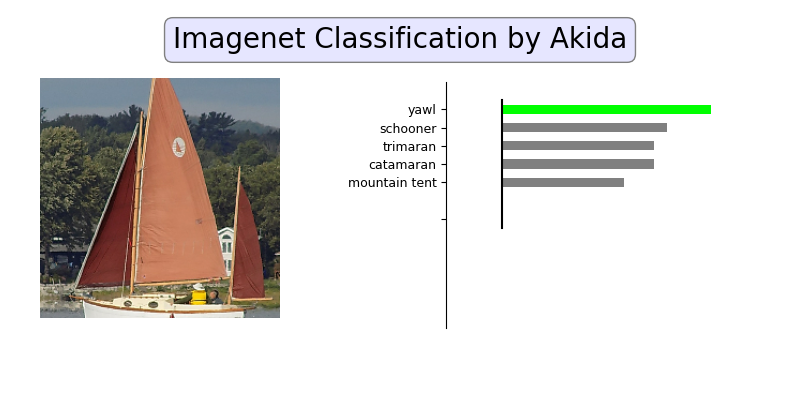

<!DOCTYPE html>
<html class="writer-html5" lang="en" >
<head>
  <meta charset="utf-8" /><meta name="generator" content="Docutils 0.17.1: http://docutils.sourceforge.net/" />

  <meta name="viewport" content="width=device-width, initial-scale=1.0" />
  <title>AkidaNet/ImageNet inference &mdash; Akida Examples  documentation</title>
      <link rel="stylesheet" href="../../_static/pygments.css" type="text/css" />
      <link rel="stylesheet" href="../../_static/css/theme.css" type="text/css" />
      <link rel="stylesheet" href="../../_static/sg_gallery.css" type="text/css" />
      <link rel="stylesheet" href="../../_static/sg_gallery-binder.css" type="text/css" />
      <link rel="stylesheet" href="../../_static/sg_gallery-dataframe.css" type="text/css" />
      <link rel="stylesheet" href="../../_static/sg_gallery-rendered-html.css" type="text/css" />
      <link rel="stylesheet" href="../../_static/custom.css" type="text/css" />
    <link rel="shortcut icon" href="../../_static/favicon.ico"/>
  <!--[if lt IE 9]>
    <script src="../../_static/js/html5shiv.min.js"></script>
  <![endif]-->
  
        <script data-url_root="../../" id="documentation_options" src="../../_static/documentation_options.js"></script>
        <script src="../../_static/jquery.js"></script>
        <script src="../../_static/underscore.js"></script>
        <script src="../../_static/doctools.js"></script>
    <script src="../../_static/js/theme.js"></script>
    <link rel="index" title="Index" href="../../genindex.html" />
    <link rel="search" title="Search" href="../../search.html" />
    <link rel="next" title="DS-CNN/KWS inference" href="plot_2_ds_cnn_kws.html" />
    <link rel="prev" title="GXNOR/MNIST inference" href="plot_0_gxnor_mnist.html" /> 
</head>

<body class="wy-body-for-nav"> 
  <div class="wy-grid-for-nav">
    <nav data-toggle="wy-nav-shift" class="wy-nav-side">
      <div class="wy-side-scroll">
        <div class="wy-side-nav-search"  style="background: #78b3ff" >
            <a href="../../index.html">
            
          </a>
              <div class="version">
                MetaTF 2.2.3
              </div>
<div role="search">
  <form id="rtd-search-form" class="wy-form" action="../../search.html" method="get">
    <input type="text" name="q" placeholder="Search docs" />
    <input type="hidden" name="check_keywords" value="yes" />
    <input type="hidden" name="area" value="default" />
  </form>
</div>
        </div><div class="wy-menu wy-menu-vertical" data-spy="affix" role="navigation" aria-label="Navigation menu">
              <ul class="current">
<li class="toctree-l1"><a class="reference internal" href="../../index.html">Overview</a></li>
<li class="toctree-l1"><a class="reference internal" href="../../installation.html">Installation</a><ul>
<li class="toctree-l2"><a class="reference internal" href="../../installation.html#requirements">Requirements</a></li>
<li class="toctree-l2"><a class="reference internal" href="../../installation.html#quick-installation">Quick installation</a></li>
<li class="toctree-l2"><a class="reference internal" href="../../installation.html#running-examples">Running examples</a></li>
</ul>
</li>
<li class="toctree-l1"><a class="reference internal" href="../../user_guide/user_guide.html">User guide</a><ul>
<li class="toctree-l2"><a class="reference internal" href="../../user_guide/getting_started.html">Getting started</a><ul>
<li class="toctree-l3"><a class="reference internal" href="../../user_guide/getting_started.html#for-beginners">For beginners</a></li>
<li class="toctree-l3"><a class="reference internal" href="../../user_guide/getting_started.html#for-users-familiar-with-deep-learning">For users familiar with deep-learning</a></li>
</ul>
</li>
<li class="toctree-l2"><a class="reference internal" href="../../user_guide/akida.html">Akida user guide</a><ul>
<li class="toctree-l3"><a class="reference internal" href="../../user_guide/akida.html#introduction">Introduction</a><ul>
<li class="toctree-l4"><a class="reference internal" href="../../user_guide/akida.html#akida-layers">Akida layers</a></li>
<li class="toctree-l4"><a class="reference internal" href="../../user_guide/akida.html#input-format">Input Format</a></li>
<li class="toctree-l4"><a class="reference internal" href="../../user_guide/akida.html#a-versatile-machine-learning-framework">A versatile machine learning framework</a></li>
</ul>
</li>
<li class="toctree-l3"><a class="reference internal" href="../../user_guide/akida.html#the-sequential-model">The Sequential model</a><ul>
<li class="toctree-l4"><a class="reference internal" href="../../user_guide/akida.html#specifying-the-model">Specifying the model</a></li>
<li class="toctree-l4"><a class="reference internal" href="../../user_guide/akida.html#accessing-layer-parameters-and-weights">Accessing layer parameters and weights</a></li>
<li class="toctree-l4"><a class="reference internal" href="../../user_guide/akida.html#inference">Inference</a></li>
<li class="toctree-l4"><a class="reference internal" href="../../user_guide/akida.html#saving-and-loading">Saving and loading</a></li>
<li class="toctree-l4"><a class="reference internal" href="../../user_guide/akida.html#input-layer-types">Input layer types</a></li>
<li class="toctree-l4"><a class="reference internal" href="../../user_guide/akida.html#data-processing-layer-types">Data-Processing layer types</a></li>
</ul>
</li>
<li class="toctree-l3"><a class="reference internal" href="../../user_guide/akida.html#model-hardware-mapping">Model Hardware Mapping</a><ul>
<li class="toctree-l4"><a class="reference internal" href="../../user_guide/akida.html#devices">Devices</a></li>
<li class="toctree-l4"><a class="reference internal" href="../../user_guide/akida.html#model-mapping">Model mapping</a></li>
<li class="toctree-l4"><a class="reference internal" href="../../user_guide/akida.html#advanced-mapping-details-and-hardware-devices-usage">Advanced Mapping Details and Hardware Devices Usage</a></li>
<li class="toctree-l4"><a class="reference internal" href="../../user_guide/akida.html#performances-measurement">Performances measurement</a></li>
</ul>
</li>
<li class="toctree-l3"><a class="reference internal" href="../../user_guide/akida.html#id1">Using Akida Edge learning</a><ul>
<li class="toctree-l4"><a class="reference internal" href="../../user_guide/akida.html#learning-constraints">Learning constraints</a></li>
<li class="toctree-l4"><a class="reference internal" href="../../user_guide/akida.html#compiling-a-layer">Compiling a layer</a></li>
</ul>
</li>
</ul>
</li>
<li class="toctree-l2"><a class="reference internal" href="../../user_guide/cnn2snn.html">CNN2SNN toolkit</a><ul>
<li class="toctree-l3"><a class="reference internal" href="../../user_guide/cnn2snn.html#overview">Overview</a><ul>
<li class="toctree-l4"><a class="reference internal" href="../../user_guide/cnn2snn.html#conversion-workflow">Conversion workflow</a></li>
<li class="toctree-l4"><a class="reference internal" href="../../user_guide/cnn2snn.html#typical-training-scenario">Typical training scenario</a></li>
<li class="toctree-l4"><a class="reference internal" href="../../user_guide/cnn2snn.html#design-compatibility-constraints">Design compatibility constraints</a></li>
<li class="toctree-l4"><a class="reference internal" href="../../user_guide/cnn2snn.html#quantization-compatibility-constraints">Quantization compatibility constraints</a></li>
<li class="toctree-l4"><a class="reference internal" href="../../user_guide/cnn2snn.html#command-line-interface">Command-line interface</a></li>
</ul>
</li>
<li class="toctree-l3"><a class="reference internal" href="../../user_guide/cnn2snn.html#layers-considerations">Layers Considerations</a><ul>
<li class="toctree-l4"><a class="reference internal" href="../../user_guide/cnn2snn.html#supported-layer-types">Supported layer types</a></li>
<li class="toctree-l4"><a class="reference internal" href="../../user_guide/cnn2snn.html#cnn2snn-quantization-aware-layers">CNN2SNN Quantization-aware layers</a></li>
<li class="toctree-l4"><a class="reference internal" href="../../user_guide/cnn2snn.html#training-only-layers">Training-Only Layers</a></li>
<li class="toctree-l4"><a class="reference internal" href="../../user_guide/cnn2snn.html#first-layers">First Layers</a></li>
<li class="toctree-l4"><a class="reference internal" href="../../user_guide/cnn2snn.html#id6">Final Layers</a></li>
</ul>
</li>
<li class="toctree-l3"><a class="reference internal" href="../../user_guide/cnn2snn.html#tips-and-tricks">Tips and Tricks</a></li>
</ul>
</li>
<li class="toctree-l2"><a class="reference internal" href="../../user_guide/akida_models.html">Akida models zoo</a><ul>
<li class="toctree-l3"><a class="reference internal" href="../../user_guide/akida_models.html#overview">Overview</a></li>
<li class="toctree-l3"><a class="reference internal" href="../../user_guide/akida_models.html#command-line-interface-for-model-creation">Command-line interface for model creation</a></li>
<li class="toctree-l3"><a class="reference internal" href="../../user_guide/akida_models.html#command-line-interface-for-model-training">Command-line interface for model training</a><ul>
<li class="toctree-l4"><a class="reference internal" href="../../user_guide/akida_models.html#utk-face-training">UTK Face training</a></li>
<li class="toctree-l4"><a class="reference internal" href="../../user_guide/akida_models.html#kws-training">KWS training</a></li>
<li class="toctree-l4"><a class="reference internal" href="../../user_guide/akida_models.html#yolo-training">YOLO training</a></li>
<li class="toctree-l4"><a class="reference internal" href="../../user_guide/akida_models.html#akidanet-training">AkidaNet training</a></li>
</ul>
</li>
<li class="toctree-l3"><a class="reference internal" href="../../user_guide/akida_models.html#command-line-interface-for-model-evaluation">Command-line interface for model evaluation</a></li>
<li class="toctree-l3"><a class="reference internal" href="../../user_guide/akida_models.html#id1">Layer Blocks</a><ul>
<li class="toctree-l4"><a class="reference internal" href="../../user_guide/akida_models.html#conv-block"><code class="docutils literal notranslate"><span class="pre">conv_block</span></code></a></li>
<li class="toctree-l4"><a class="reference internal" href="../../user_guide/akida_models.html#dense-block"><code class="docutils literal notranslate"><span class="pre">dense_block</span></code></a></li>
<li class="toctree-l4"><a class="reference internal" href="../../user_guide/akida_models.html#separable-conv-block"><code class="docutils literal notranslate"><span class="pre">separable_conv_block</span></code></a></li>
</ul>
</li>
</ul>
</li>
<li class="toctree-l2"><a class="reference internal" href="../../user_guide/hw_constraints.html">Hardware constraints</a><ul>
<li class="toctree-l3"><a class="reference internal" href="../../user_guide/hw_constraints.html#inputconvolutional">InputConvolutional</a></li>
<li class="toctree-l3"><a class="reference internal" href="../../user_guide/hw_constraints.html#convolutional">Convolutional</a></li>
<li class="toctree-l3"><a class="reference internal" href="../../user_guide/hw_constraints.html#separableconvolutional">SeparableConvolutional</a></li>
<li class="toctree-l3"><a class="reference internal" href="../../user_guide/hw_constraints.html#fullyconnected">FullyConnected</a></li>
</ul>
</li>
<li class="toctree-l2"><a class="reference internal" href="../../user_guide/compatibility.html">Akida versions compatibility</a><ul>
<li class="toctree-l3"><a class="reference internal" href="../../user_guide/compatibility.html#upgrading-models-with-legacy-quantizers">Upgrading models with legacy quantizers</a></li>
</ul>
</li>
</ul>
</li>
<li class="toctree-l1"><a class="reference internal" href="../../api_reference/api_reference.html">API reference</a><ul>
<li class="toctree-l2"><a class="reference internal" href="../../api_reference/akida_apis.html">Akida runtime</a><ul>
<li class="toctree-l3"><a class="reference internal" href="../../api_reference/akida_apis.html#model">Model</a></li>
<li class="toctree-l3"><a class="reference internal" href="../../api_reference/akida_apis.html#layer">Layer</a><ul>
<li class="toctree-l4"><a class="reference internal" href="../../api_reference/akida_apis.html#id1">Layer</a></li>
<li class="toctree-l4"><a class="reference internal" href="../../api_reference/akida_apis.html#mapping">Mapping</a></li>
</ul>
</li>
<li class="toctree-l3"><a class="reference internal" href="../../api_reference/akida_apis.html#inputdata">InputData</a></li>
<li class="toctree-l3"><a class="reference internal" href="../../api_reference/akida_apis.html#inputconvolutional">InputConvolutional</a></li>
<li class="toctree-l3"><a class="reference internal" href="../../api_reference/akida_apis.html#fullyconnected">FullyConnected</a></li>
<li class="toctree-l3"><a class="reference internal" href="../../api_reference/akida_apis.html#convolutional">Convolutional</a></li>
<li class="toctree-l3"><a class="reference internal" href="../../api_reference/akida_apis.html#separableconvolutional">SeparableConvolutional</a></li>
<li class="toctree-l3"><a class="reference internal" href="../../api_reference/akida_apis.html#layer-parameters">Layer parameters</a><ul>
<li class="toctree-l4"><a class="reference internal" href="../../api_reference/akida_apis.html#layertype">LayerType</a></li>
<li class="toctree-l4"><a class="reference internal" href="../../api_reference/akida_apis.html#padding">Padding</a></li>
<li class="toctree-l4"><a class="reference internal" href="../../api_reference/akida_apis.html#pooltype">PoolType</a></li>
</ul>
</li>
<li class="toctree-l3"><a class="reference internal" href="../../api_reference/akida_apis.html#optimizers">Optimizers</a></li>
<li class="toctree-l3"><a class="reference internal" href="../../api_reference/akida_apis.html#sequence">Sequence</a><ul>
<li class="toctree-l4"><a class="reference internal" href="../../api_reference/akida_apis.html#id2">Sequence</a></li>
<li class="toctree-l4"><a class="reference internal" href="../../api_reference/akida_apis.html#backendtype">BackendType</a></li>
<li class="toctree-l4"><a class="reference internal" href="../../api_reference/akida_apis.html#pass">Pass</a></li>
</ul>
</li>
<li class="toctree-l3"><a class="reference internal" href="../../api_reference/akida_apis.html#device">Device</a><ul>
<li class="toctree-l4"><a class="reference internal" href="../../api_reference/akida_apis.html#id3">Device</a></li>
<li class="toctree-l4"><a class="reference internal" href="../../api_reference/akida_apis.html#hwversion">HwVersion</a></li>
</ul>
</li>
<li class="toctree-l3"><a class="reference internal" href="../../api_reference/akida_apis.html#hwdevice">HWDevice</a><ul>
<li class="toctree-l4"><a class="reference internal" href="../../api_reference/akida_apis.html#id4">HWDevice</a></li>
<li class="toctree-l4"><a class="reference internal" href="../../api_reference/akida_apis.html#socdriver">SocDriver</a></li>
<li class="toctree-l4"><a class="reference internal" href="../../api_reference/akida_apis.html#clockmode">ClockMode</a></li>
</ul>
</li>
<li class="toctree-l3"><a class="reference internal" href="../../api_reference/akida_apis.html#powermeter">PowerMeter</a></li>
<li class="toctree-l3"><a class="reference internal" href="../../api_reference/akida_apis.html#np">NP</a></li>
<li class="toctree-l3"><a class="reference internal" href="../../api_reference/akida_apis.html#tools">Tools</a><ul>
<li class="toctree-l4"><a class="reference internal" href="../../api_reference/akida_apis.html#sparsity">Sparsity</a></li>
<li class="toctree-l4"><a class="reference internal" href="../../api_reference/akida_apis.html#compatibility">Compatibility</a></li>
</ul>
</li>
</ul>
</li>
<li class="toctree-l2"><a class="reference internal" href="../../api_reference/cnn2snn_apis.html">CNN2SNN</a><ul>
<li class="toctree-l3"><a class="reference internal" href="../../api_reference/cnn2snn_apis.html#tool-functions">Tool functions</a><ul>
<li class="toctree-l4"><a class="reference internal" href="../../api_reference/cnn2snn_apis.html#quantize">quantize</a></li>
<li class="toctree-l4"><a class="reference internal" href="../../api_reference/cnn2snn_apis.html#quantize-layer">quantize_layer</a></li>
<li class="toctree-l4"><a class="reference internal" href="../../api_reference/cnn2snn_apis.html#convert">convert</a></li>
<li class="toctree-l4"><a class="reference internal" href="../../api_reference/cnn2snn_apis.html#check-model-compatibility">check_model_compatibility</a></li>
<li class="toctree-l4"><a class="reference internal" href="../../api_reference/cnn2snn_apis.html#load-quantized-model">load_quantized_model</a></li>
<li class="toctree-l4"><a class="reference internal" href="../../api_reference/cnn2snn_apis.html#transforms">Transforms</a></li>
<li class="toctree-l4"><a class="reference internal" href="../../api_reference/cnn2snn_apis.html#calibration">Calibration</a></li>
</ul>
</li>
<li class="toctree-l3"><a class="reference internal" href="../../api_reference/cnn2snn_apis.html#quantizers">Quantizers</a><ul>
<li class="toctree-l4"><a class="reference internal" href="../../api_reference/cnn2snn_apis.html#weightquantizer">WeightQuantizer</a></li>
<li class="toctree-l4"><a class="reference internal" href="../../api_reference/cnn2snn_apis.html#linearweightquantizer">LinearWeightQuantizer</a></li>
<li class="toctree-l4"><a class="reference internal" href="../../api_reference/cnn2snn_apis.html#stdweightquantizer">StdWeightQuantizer</a></li>
<li class="toctree-l4"><a class="reference internal" href="../../api_reference/cnn2snn_apis.html#stdperaxisquantizer">StdPerAxisQuantizer</a></li>
<li class="toctree-l4"><a class="reference internal" href="../../api_reference/cnn2snn_apis.html#maxquantizer">MaxQuantizer</a></li>
<li class="toctree-l4"><a class="reference internal" href="../../api_reference/cnn2snn_apis.html#maxperaxisquantizer">MaxPerAxisQuantizer</a></li>
</ul>
</li>
<li class="toctree-l3"><a class="reference internal" href="../../api_reference/cnn2snn_apis.html#quantized-layers">Quantized layers</a><ul>
<li class="toctree-l4"><a class="reference internal" href="../../api_reference/cnn2snn_apis.html#quantizedconv2d">QuantizedConv2D</a></li>
<li class="toctree-l4"><a class="reference internal" href="../../api_reference/cnn2snn_apis.html#quantizeddense">QuantizedDense</a></li>
<li class="toctree-l4"><a class="reference internal" href="../../api_reference/cnn2snn_apis.html#quantizedseparableconv2d">QuantizedSeparableConv2D</a></li>
<li class="toctree-l4"><a class="reference internal" href="../../api_reference/cnn2snn_apis.html#quantizedactivation">QuantizedActivation</a></li>
<li class="toctree-l4"><a class="reference internal" href="../../api_reference/cnn2snn_apis.html#activationdiscreterelu">ActivationDiscreteRelu</a></li>
<li class="toctree-l4"><a class="reference internal" href="../../api_reference/cnn2snn_apis.html#quantizedrelu">QuantizedReLU</a></li>
</ul>
</li>
</ul>
</li>
<li class="toctree-l2"><a class="reference internal" href="../../api_reference/akida_models_apis.html">Akida models</a><ul>
<li class="toctree-l3"><a class="reference internal" href="../../api_reference/akida_models_apis.html#layer-blocks">Layer blocks</a><ul>
<li class="toctree-l4"><a class="reference internal" href="../../api_reference/akida_models_apis.html#conv-block">conv_block</a></li>
<li class="toctree-l4"><a class="reference internal" href="../../api_reference/akida_models_apis.html#separable-conv-block">separable_conv_block</a></li>
<li class="toctree-l4"><a class="reference internal" href="../../api_reference/akida_models_apis.html#dense-block">dense_block</a></li>
</ul>
</li>
<li class="toctree-l3"><a class="reference internal" href="../../api_reference/akida_models_apis.html#helpers">Helpers</a><ul>
<li class="toctree-l4"><a class="reference internal" href="../../api_reference/akida_models_apis.html#batchnormalization-gamma-constraint">BatchNormalization gamma constraint</a></li>
</ul>
</li>
<li class="toctree-l3"><a class="reference internal" href="../../api_reference/akida_models_apis.html#knowledge-distillation">Knowledge distillation</a></li>
<li class="toctree-l3"><a class="reference internal" href="../../api_reference/akida_models_apis.html#pruning">Pruning</a></li>
<li class="toctree-l3"><a class="reference internal" href="../../api_reference/akida_models_apis.html#training">Training</a></li>
<li class="toctree-l3"><a class="reference internal" href="../../api_reference/akida_models_apis.html#model-zoo">Model zoo</a><ul>
<li class="toctree-l4"><a class="reference internal" href="../../api_reference/akida_models_apis.html#akidanet">AkidaNet</a></li>
<li class="toctree-l4"><a class="reference internal" href="../../api_reference/akida_models_apis.html#mobilenet">Mobilenet</a></li>
<li class="toctree-l4"><a class="reference internal" href="../../api_reference/akida_models_apis.html#ds-cnn">DS-CNN</a></li>
<li class="toctree-l4"><a class="reference internal" href="../../api_reference/akida_models_apis.html#vgg">VGG</a></li>
<li class="toctree-l4"><a class="reference internal" href="../../api_reference/akida_models_apis.html#yolo">YOLO</a></li>
<li class="toctree-l4"><a class="reference internal" href="../../api_reference/akida_models_apis.html#convtiny">ConvTiny</a></li>
<li class="toctree-l4"><a class="reference internal" href="../../api_reference/akida_models_apis.html#pointnet">PointNet++</a></li>
<li class="toctree-l4"><a class="reference internal" href="../../api_reference/akida_models_apis.html#gxnor">GXNOR</a></li>
</ul>
</li>
</ul>
</li>
</ul>
</li>
<li class="toctree-l1 current"><a class="reference internal" href="../index.html">Examples</a><ul class="current">
<li class="toctree-l2 current"><a class="reference internal" href="../index.html#general-examples">General examples</a><ul class="current">
<li class="toctree-l3"><a class="reference internal" href="plot_0_gxnor_mnist.html">GXNOR/MNIST inference</a><ul>
<li class="toctree-l4"><a class="reference internal" href="plot_0_gxnor_mnist.html#dataset-preparation">1. Dataset preparation</a></li>
<li class="toctree-l4"><a class="reference internal" href="plot_0_gxnor_mnist.html#create-a-keras-gxnor-model">2. Create a Keras GXNOR model</a></li>
<li class="toctree-l4"><a class="reference internal" href="plot_0_gxnor_mnist.html#conversion-to-akida">3. Conversion to Akida</a></li>
</ul>
</li>
<li class="toctree-l3 current"><a class="current reference internal" href="#">AkidaNet/ImageNet inference</a><ul>
<li class="toctree-l4"><a class="reference internal" href="#dataset-preparation">1. Dataset preparation</a></li>
<li class="toctree-l4"><a class="reference internal" href="#create-a-keras-akidanet-model">2. Create a Keras AkidaNet model</a></li>
<li class="toctree-l4"><a class="reference internal" href="#quantized-model">3. Quantized model</a></li>
<li class="toctree-l4"><a class="reference internal" href="#pretrained-quantized-model">4. Pretrained quantized model</a></li>
<li class="toctree-l4"><a class="reference internal" href="#conversion-to-akida">5. Conversion to Akida</a></li>
<li class="toctree-l4"><a class="reference internal" href="#hardware-mapping-and-performance">6. Hardware mapping and performance</a></li>
</ul>
</li>
<li class="toctree-l3"><a class="reference internal" href="plot_2_ds_cnn_kws.html">DS-CNN/KWS inference</a><ul>
<li class="toctree-l4"><a class="reference internal" href="plot_2_ds_cnn_kws.html#load-the-preprocessed-dataset">1. Load the preprocessed dataset</a></li>
<li class="toctree-l4"><a class="reference internal" href="plot_2_ds_cnn_kws.html#load-a-pre-trained-native-keras-model">2. Load a pre-trained native Keras model</a></li>
<li class="toctree-l4"><a class="reference internal" href="plot_2_ds_cnn_kws.html#load-a-pre-trained-quantized-keras-model-satisfying-akida-nsoc-requirements">3. Load a pre-trained quantized Keras model satisfying Akida NSoC requirements</a></li>
<li class="toctree-l4"><a class="reference internal" href="plot_2_ds_cnn_kws.html#conversion-to-akida">4. Conversion to Akida</a></li>
<li class="toctree-l4"><a class="reference internal" href="plot_2_ds_cnn_kws.html#confusion-matrix">5. Confusion matrix</a></li>
</ul>
</li>
<li class="toctree-l3"><a class="reference internal" href="plot_3_regression.html">Regression tutorial</a><ul>
<li class="toctree-l4"><a class="reference internal" href="plot_3_regression.html#load-the-dataset">1. Load the dataset</a></li>
<li class="toctree-l4"><a class="reference internal" href="plot_3_regression.html#load-a-pre-trained-native-keras-model">2. Load a pre-trained native Keras model</a></li>
<li class="toctree-l4"><a class="reference internal" href="plot_3_regression.html#load-a-pre-trained-quantized-keras-model-satisfying-akida-nsoc-requirements">3. Load a pre-trained quantized Keras model satisfying Akida NSoC requirements</a></li>
<li class="toctree-l4"><a class="reference internal" href="plot_3_regression.html#conversion-to-akida">4. Conversion to Akida</a></li>
<li class="toctree-l4"><a class="reference internal" href="plot_3_regression.html#estimate-age-on-a-single-image">5. Estimate age on a single image</a></li>
</ul>
</li>
<li class="toctree-l3"><a class="reference internal" href="plot_4_transfer_learning.html">Transfer learning with AkidaNet for PlantVillage</a><ul>
<li class="toctree-l4"><a class="reference internal" href="plot_4_transfer_learning.html#transfer-learning-process">Transfer learning process</a></li>
<li class="toctree-l4"><a class="reference internal" href="plot_4_transfer_learning.html#dataset-preparation">1. Dataset preparation</a></li>
<li class="toctree-l4"><a class="reference internal" href="plot_4_transfer_learning.html#get-a-trained-akidanet-base-model">2. Get a trained AkidaNet base model</a></li>
<li class="toctree-l4"><a class="reference internal" href="plot_4_transfer_learning.html#add-a-float-classification-head-to-the-model">3. Add a float classification head to the model</a></li>
<li class="toctree-l4"><a class="reference internal" href="plot_4_transfer_learning.html#freeze-the-base-model">4. Freeze the base model</a></li>
<li class="toctree-l4"><a class="reference internal" href="plot_4_transfer_learning.html#train-for-a-few-epochs">5. Train for a few epochs</a></li>
<li class="toctree-l4"><a class="reference internal" href="plot_4_transfer_learning.html#quantize-the-classification-head">6. Quantize the classification head</a></li>
<li class="toctree-l4"><a class="reference internal" href="plot_4_transfer_learning.html#compute-accuracy">7. Compute accuracy</a></li>
</ul>
</li>
<li class="toctree-l3"><a class="reference internal" href="plot_5_voc_yolo_detection.html">YOLO/PASCAL-VOC detection tutorial</a><ul>
<li class="toctree-l4"><a class="reference internal" href="plot_5_voc_yolo_detection.html#introduction">1. Introduction</a></li>
<li class="toctree-l4"><a class="reference internal" href="plot_5_voc_yolo_detection.html#preprocessing-tools">2. Preprocessing tools</a></li>
<li class="toctree-l4"><a class="reference internal" href="plot_5_voc_yolo_detection.html#model-architecture">3. Model architecture</a></li>
<li class="toctree-l4"><a class="reference internal" href="plot_5_voc_yolo_detection.html#training">4. Training</a></li>
<li class="toctree-l4"><a class="reference internal" href="plot_5_voc_yolo_detection.html#performance">5. Performance</a></li>
<li class="toctree-l4"><a class="reference internal" href="plot_5_voc_yolo_detection.html#conversion-to-akida">6. Conversion to Akida</a></li>
</ul>
</li>
</ul>
</li>
<li class="toctree-l2"><a class="reference internal" href="../index.html#cnn2snn-tutorials">CNN2SNN tutorials</a><ul>
<li class="toctree-l3"><a class="reference internal" href="../cnn2snn/plot_0_cnn_flow.html">CNN conversion flow tutorial</a><ul>
<li class="toctree-l4"><a class="reference internal" href="../cnn2snn/plot_0_cnn_flow.html#load-and-reshape-mnist-dataset">1. Load and reshape MNIST dataset</a></li>
<li class="toctree-l4"><a class="reference internal" href="../cnn2snn/plot_0_cnn_flow.html#model-definition">2. Model definition</a></li>
<li class="toctree-l4"><a class="reference internal" href="../cnn2snn/plot_0_cnn_flow.html#model-training">3. Model training</a></li>
<li class="toctree-l4"><a class="reference internal" href="../cnn2snn/plot_0_cnn_flow.html#model-quantization">4. Model quantization</a></li>
<li class="toctree-l4"><a class="reference internal" href="../cnn2snn/plot_0_cnn_flow.html#model-fine-tuning-quantization-aware-training">5. Model fine tuning (quantization-aware training)</a></li>
<li class="toctree-l4"><a class="reference internal" href="../cnn2snn/plot_0_cnn_flow.html#model-conversion">6. Model conversion</a></li>
</ul>
</li>
<li class="toctree-l3"><a class="reference internal" href="../cnn2snn/plot_1_advanced_cnn2snn.html">Advanced CNN2SNN tutorial</a><ul>
<li class="toctree-l4"><a class="reference internal" href="../cnn2snn/plot_1_advanced_cnn2snn.html#design-a-cnn2snn-quantized-model">1. Design a CNN2SNN quantized model</a></li>
<li class="toctree-l4"><a class="reference internal" href="../cnn2snn/plot_1_advanced_cnn2snn.html#weight-quantizer-details">2. Weight Quantizer Details</a></li>
<li class="toctree-l4"><a class="reference internal" href="../cnn2snn/plot_1_advanced_cnn2snn.html#understanding-quantized-activation">3. Understanding quantized activation</a></li>
<li class="toctree-l4"><a class="reference internal" href="../cnn2snn/plot_1_advanced_cnn2snn.html#how-to-deal-with-too-high-scale-factors">4. How to deal with too high scale factors</a></li>
</ul>
</li>
</ul>
</li>
<li class="toctree-l2"><a class="reference internal" href="../index.html#edge-examples">Edge examples</a><ul>
<li class="toctree-l3"><a class="reference internal" href="../edge/plot_0_edge_learning_vision.html">Akida vision edge learning</a><ul>
<li class="toctree-l4"><a class="reference internal" href="../edge/plot_0_edge_learning_vision.html#dataset-preparation">1. Dataset preparation</a></li>
<li class="toctree-l4"><a class="reference internal" href="../edge/plot_0_edge_learning_vision.html#prepare-akida-model-for-learning">2. Prepare Akida model for learning</a></li>
<li class="toctree-l4"><a class="reference internal" href="../edge/plot_0_edge_learning_vision.html#edge-learning-with-akida">3. Edge learning with Akida</a></li>
</ul>
</li>
<li class="toctree-l3"><a class="reference internal" href="../edge/plot_1_edge_learning_kws.html">Akida edge learning for keyword spotting</a><ul>
<li class="toctree-l4"><a class="reference internal" href="../edge/plot_1_edge_learning_kws.html#edge-learning-process">1. Edge learning process</a></li>
<li class="toctree-l4"><a class="reference internal" href="../edge/plot_1_edge_learning_kws.html#dataset-preparation">2. Dataset preparation</a></li>
<li class="toctree-l4"><a class="reference internal" href="../edge/plot_1_edge_learning_kws.html#prepare-akida-model-for-learning">3. Prepare Akida model for learning</a></li>
<li class="toctree-l4"><a class="reference internal" href="../edge/plot_1_edge_learning_kws.html#learn-with-akida-using-the-training-set">4. Learn with Akida using the training set</a></li>
<li class="toctree-l4"><a class="reference internal" href="../edge/plot_1_edge_learning_kws.html#edge-learning">5. Edge learning</a></li>
</ul>
</li>
<li class="toctree-l3"><a class="reference internal" href="../edge/plot_2_edge_learning_parameters.html">Tips to set Akida learning parameters</a><ul>
<li class="toctree-l4"><a class="reference internal" href="../edge/plot_2_edge_learning_parameters.html#akida-learning-parameters">1. Akida learning parameters</a></li>
<li class="toctree-l4"><a class="reference internal" href="../edge/plot_2_edge_learning_parameters.html#create-akida-model">2. Create Akida model</a></li>
<li class="toctree-l4"><a class="reference internal" href="../edge/plot_2_edge_learning_parameters.html#estimate-the-required-number-of-weights-of-the-trainable-layer">3. Estimate the required number of weights of the trainable layer</a></li>
<li class="toctree-l4"><a class="reference internal" href="../edge/plot_2_edge_learning_parameters.html#estimate-the-number-of-neurons-per-class">4. Estimate the number of neurons per class</a></li>
</ul>
</li>
</ul>
</li>
</ul>
</li>
<li class="toctree-l1"><a class="reference internal" href="../../zoo_performances.html">Model zoo performances</a><ul>
<li class="toctree-l2"><a class="reference internal" href="../../zoo_performances.html#image-icon-ref-image-domain"> Image domain</a><ul>
<li class="toctree-l3"><a class="reference internal" href="../../zoo_performances.html#classification">Classification</a></li>
<li class="toctree-l3"><a class="reference internal" href="../../zoo_performances.html#object-detection">Object detection</a></li>
<li class="toctree-l3"><a class="reference internal" href="../../zoo_performances.html#regression">Regression</a></li>
<li class="toctree-l3"><a class="reference internal" href="../../zoo_performances.html#face-recognition">Face recognition</a></li>
</ul>
</li>
<li class="toctree-l2"><a class="reference internal" href="../../zoo_performances.html#audio-icon-ref-audio-domain"> Audio domain</a><ul>
<li class="toctree-l3"><a class="reference internal" href="../../zoo_performances.html#keyword-spotting">Keyword spotting</a></li>
</ul>
</li>
<li class="toctree-l2"><a class="reference internal" href="../../zoo_performances.html#time-icon-ref-time-domain"> Time domain</a><ul>
<li class="toctree-l3"><a class="reference internal" href="../../zoo_performances.html#fault-detection">Fault detection</a></li>
<li class="toctree-l3"><a class="reference internal" href="../../zoo_performances.html#id1">Classification</a></li>
</ul>
</li>
<li class="toctree-l2"><a class="reference internal" href="../../zoo_performances.html#pointcloud-icon-ref-point-cloud"> Point cloud</a><ul>
<li class="toctree-l3"><a class="reference internal" href="../../zoo_performances.html#id2">Classification</a></li>
</ul>
</li>
</ul>
</li>
<li class="toctree-l1"><a class="reference external" href="https://github.com/Brainchip-Inc/akida_examples/releases">Changelog</a></li>
<li class="toctree-l1"><a class="reference external" href="https://support.brainchip.com/portal/home">Support</a></li>
<li class="toctree-l1"><a class="reference internal" href="../../license.html">License</a></li>
</ul>

        </div>
      </div>
    </nav>

    <section data-toggle="wy-nav-shift" class="wy-nav-content-wrap"><nav class="wy-nav-top" aria-label="Mobile navigation menu"  style="background: #78b3ff" >
          <i data-toggle="wy-nav-top" class="fa fa-bars"></i>
          <a href="../../index.html">Akida Examples</a>
      </nav>

      <div class="wy-nav-content">
        <div class="rst-content">
          <div role="navigation" aria-label="Page navigation">
  <ul class="wy-breadcrumbs">
      <li><a href="../../index.html" class="icon icon-home"></a> &raquo;</li>
          <li><a href="../index.html">Akida examples</a> &raquo;</li>
      <li>AkidaNet/ImageNet inference</li>
      <li class="wy-breadcrumbs-aside">
      </li>
  </ul>
  <hr/>
</div>
          <div role="main" class="document" itemscope="itemscope" itemtype="http://schema.org/Article">
           <div itemprop="articleBody">
             
  <div class="sphx-glr-download-link-note admonition note">
<p class="admonition-title">Note</p>
<p>Click <a class="reference internal" href="#sphx-glr-download-examples-general-plot-1-akidanet-imagenet-py"><span class="std std-ref">here</span></a>
to download the full example code</p>
</div>
<section class="sphx-glr-example-title" id="akidanet-imagenet-inference">
<span id="sphx-glr-examples-general-plot-1-akidanet-imagenet-py"></span><h1>AkidaNet/ImageNet inference<a class="headerlink" href="#akidanet-imagenet-inference" title="Permalink to this headline"></a></h1>
<p>This CNN2SNN tutorial presents how to convert an AkidaNet pre-trained model into
Akida.</p>
<p>As ImageNet images are not publicly available, performances are assessed using a
set of 10 copyright free images that were found on Google using ImageNet class
names.</p>
<section id="dataset-preparation">
<h2>1. Dataset preparation<a class="headerlink" href="#dataset-preparation" title="Permalink to this headline"></a></h2>
<p>Test images all have at least 256 pixels in the smallest dimension. They must
be preprocessed to fit in the model. The <code class="docutils literal notranslate"><span class="pre">imagenet.preprocessing.preprocess_image</span></code>
function decodes, crops and extracts a square 224x224x3 patch from an input image.</p>
<div class="admonition note">
<p class="admonition-title">Note</p>
<p>Input size is here set to 224x224x3 as this is what is used by the
model presented in the next section.</p>
</div>
<div class="highlight-default notranslate"><div class="highlight"><pre><span></span><span class="kn">import</span> <span class="nn">akida</span>
<span class="kn">import</span> <span class="nn">os</span>
<span class="kn">import</span> <span class="nn">numpy</span> <span class="k">as</span> <span class="nn">np</span>

<span class="kn">from</span> <span class="nn">tensorflow.io</span> <span class="kn">import</span> <span class="n">read_file</span>
<span class="kn">from</span> <span class="nn">tensorflow.image</span> <span class="kn">import</span> <span class="n">decode_jpeg</span>
<span class="kn">from</span> <span class="nn">tensorflow.keras.utils</span> <span class="kn">import</span> <span class="n">get_file</span>

<span class="kn">from</span> <span class="nn">akida_models.imagenet</span> <span class="kn">import</span> <span class="n">preprocessing</span>

<span class="c1"># Model specification and hyperparameters</span>
<span class="n">NUM_CHANNELS</span> <span class="o">=</span> <span class="mi">3</span>
<span class="n">IMAGE_SIZE</span> <span class="o">=</span> <span class="mi">224</span>
<span class="n">NUM_CLASSES</span> <span class="o">=</span> <span class="mi">1000</span>

<span class="n">num_images</span> <span class="o">=</span> <span class="mi">10</span>

<span class="c1"># Retrieve dataset file from Brainchip data server</span>
<span class="n">file_path</span> <span class="o">=</span> <span class="n">get_file</span><span class="p">(</span>
    <span class="s2">&quot;imagenet_like.zip&quot;</span><span class="p">,</span>
    <span class="s2">&quot;http://data.brainchip.com/dataset-mirror/imagenet_like/imagenet_like.zip&quot;</span><span class="p">,</span>
    <span class="n">cache_subdir</span><span class="o">=</span><span class="s1">&#39;datasets/imagenet_like&#39;</span><span class="p">,</span>
    <span class="n">extract</span><span class="o">=</span><span class="kc">True</span><span class="p">)</span>
<span class="n">data_folder</span> <span class="o">=</span> <span class="n">os</span><span class="o">.</span><span class="n">path</span><span class="o">.</span><span class="n">dirname</span><span class="p">(</span><span class="n">file_path</span><span class="p">)</span>

<span class="c1"># Load images for test set</span>
<span class="n">x_test_files</span> <span class="o">=</span> <span class="p">[]</span>
<span class="n">x_test</span> <span class="o">=</span> <span class="n">np</span><span class="o">.</span><span class="n">zeros</span><span class="p">((</span><span class="n">num_images</span><span class="p">,</span> <span class="mi">224</span><span class="p">,</span> <span class="mi">224</span><span class="p">,</span> <span class="mi">3</span><span class="p">))</span><span class="o">.</span><span class="n">astype</span><span class="p">(</span><span class="s1">&#39;uint8&#39;</span><span class="p">)</span>
<span class="k">for</span> <span class="nb">id</span> <span class="ow">in</span> <span class="nb">range</span><span class="p">(</span><span class="n">num_images</span><span class="p">):</span>
    <span class="n">test_file</span> <span class="o">=</span> <span class="s1">&#39;image_&#39;</span> <span class="o">+</span> <span class="nb">str</span><span class="p">(</span><span class="nb">id</span> <span class="o">+</span> <span class="mi">1</span><span class="p">)</span><span class="o">.</span><span class="n">zfill</span><span class="p">(</span><span class="mi">2</span><span class="p">)</span> <span class="o">+</span> <span class="s1">&#39;.jpg&#39;</span>
    <span class="n">x_test_files</span><span class="o">.</span><span class="n">append</span><span class="p">(</span><span class="n">test_file</span><span class="p">)</span>
    <span class="n">img_path</span> <span class="o">=</span> <span class="n">os</span><span class="o">.</span><span class="n">path</span><span class="o">.</span><span class="n">join</span><span class="p">(</span><span class="n">data_folder</span><span class="p">,</span> <span class="n">test_file</span><span class="p">)</span>
    <span class="n">base_image</span> <span class="o">=</span> <span class="n">read_file</span><span class="p">(</span><span class="n">img_path</span><span class="p">)</span>
    <span class="n">image</span> <span class="o">=</span> <span class="n">decode_jpeg</span><span class="p">(</span><span class="n">base_image</span><span class="p">,</span> <span class="n">channels</span><span class="o">=</span><span class="n">NUM_CHANNELS</span><span class="p">)</span>
    <span class="n">image</span> <span class="o">=</span> <span class="n">preprocessing</span><span class="o">.</span><span class="n">preprocess_image</span><span class="p">(</span><span class="n">image</span><span class="p">,</span> <span class="n">IMAGE_SIZE</span><span class="p">)</span>
    <span class="n">x_test</span><span class="p">[</span><span class="nb">id</span><span class="p">,</span> <span class="p">:,</span> <span class="p">:,</span> <span class="p">:]</span> <span class="o">=</span> <span class="n">np</span><span class="o">.</span><span class="n">expand_dims</span><span class="p">(</span><span class="n">image</span><span class="p">,</span> <span class="n">axis</span><span class="o">=</span><span class="mi">0</span><span class="p">)</span>

<span class="nb">print</span><span class="p">(</span><span class="sa">f</span><span class="s1">&#39;</span><span class="si">{</span><span class="n">num_images</span><span class="si">}</span><span class="s1"> images loaded and preprocessed.&#39;</span><span class="p">)</span>
</pre></div>
</div>
<p class="sphx-glr-script-out">Out:</p>
<div class="sphx-glr-script-out highlight-none notranslate"><div class="highlight"><pre><span></span>Downloading data from http://data.brainchip.com/dataset-mirror/imagenet_like/imagenet_like.zip

   16384/20418307 [..............................] - ETA: 17s
  319488/20418307 [..............................] - ETA: 4s 
  901120/20418307 [&gt;.............................] - ETA: 2s
 1499136/20418307 [=&gt;............................] - ETA: 2s
 1794048/20418307 [=&gt;............................] - ETA: 2s
 2170880/20418307 [==&gt;...........................] - ETA: 2s
 2564096/20418307 [==&gt;...........................] - ETA: 2s
 2965504/20418307 [===&gt;..........................] - ETA: 2s
 3391488/20418307 [===&gt;..........................] - ETA: 2s
 3817472/20418307 [====&gt;.........................] - ETA: 2s
 4251648/20418307 [=====&gt;........................] - ETA: 1s
 4669440/20418307 [=====&gt;........................] - ETA: 1s
 4964352/20418307 [======&gt;.......................] - ETA: 1s
 5300224/20418307 [======&gt;.......................] - ETA: 1s
 5636096/20418307 [=======&gt;......................] - ETA: 1s
 5955584/20418307 [=======&gt;......................] - ETA: 1s
 6307840/20418307 [========&gt;.....................] - ETA: 1s
 6651904/20418307 [========&gt;.....................] - ETA: 1s
 6995968/20418307 [=========&gt;....................] - ETA: 1s
 7372800/20418307 [=========&gt;....................] - ETA: 1s
 7667712/20418307 [==========&gt;...................] - ETA: 1s
 8069120/20418307 [==========&gt;...................] - ETA: 1s
 8454144/20418307 [===========&gt;..................] - ETA: 1s
 8871936/20418307 [============&gt;.................] - ETA: 1s
 9281536/20418307 [============&gt;.................] - ETA: 1s
 9707520/20418307 [=============&gt;................] - ETA: 1s
10133504/20418307 [=============&gt;................] - ETA: 1s
10575872/20418307 [==============&gt;...............] - ETA: 1s
11018240/20418307 [===============&gt;..............] - ETA: 1s
11468800/20418307 [===============&gt;..............] - ETA: 1s
11935744/20418307 [================&gt;.............] - ETA: 1s
12386304/20418307 [=================&gt;............] - ETA: 1s
12869632/20418307 [=================&gt;............] - ETA: 0s
13352960/20418307 [==================&gt;...........] - ETA: 0s
13844480/20418307 [===================&gt;..........] - ETA: 0s
14344192/20418307 [====================&gt;.........] - ETA: 0s
14843904/20418307 [====================&gt;.........] - ETA: 0s
15360000/20418307 [=====================&gt;........] - ETA: 0s
15884288/20418307 [======================&gt;.......] - ETA: 0s
16384000/20418307 [=======================&gt;......] - ETA: 0s
16916480/20418307 [=======================&gt;......] - ETA: 0s
17416192/20418307 [========================&gt;.....] - ETA: 0s
17956864/20418307 [=========================&gt;....] - ETA: 0s
18481152/20418307 [==========================&gt;...] - ETA: 0s
19038208/20418307 [==========================&gt;...] - ETA: 0s
19587072/20418307 [===========================&gt;..] - ETA: 0s
20152320/20418307 [============================&gt;.] - ETA: 0s
20422656/20418307 [==============================] - 2s 0us/step

20430848/20418307 [==============================] - 2s 0us/step
10 images loaded and preprocessed.
</pre></div>
</div>
<p>Labels for test images are stored in the akida_models package. The matching
between names (<em>string</em>) and labels (<em>integer</em>) is given through the
<code class="docutils literal notranslate"><span class="pre">imagenet.preprocessing.index_to_label</span></code> method.</p>
<div class="highlight-default notranslate"><div class="highlight"><pre><span></span><span class="kn">import</span> <span class="nn">csv</span>

<span class="c1"># Parse labels file</span>
<span class="n">fname</span> <span class="o">=</span> <span class="n">os</span><span class="o">.</span><span class="n">path</span><span class="o">.</span><span class="n">join</span><span class="p">(</span><span class="n">data_folder</span><span class="p">,</span> <span class="s1">&#39;labels_validation.txt&#39;</span><span class="p">)</span>
<span class="n">validation_labels</span> <span class="o">=</span> <span class="nb">dict</span><span class="p">()</span>
<span class="k">with</span> <span class="nb">open</span><span class="p">(</span><span class="n">fname</span><span class="p">,</span> <span class="n">newline</span><span class="o">=</span><span class="s1">&#39;&#39;</span><span class="p">)</span> <span class="k">as</span> <span class="n">csvfile</span><span class="p">:</span>
    <span class="n">reader</span> <span class="o">=</span> <span class="n">csv</span><span class="o">.</span><span class="n">reader</span><span class="p">(</span><span class="n">csvfile</span><span class="p">,</span> <span class="n">delimiter</span><span class="o">=</span><span class="s1">&#39; &#39;</span><span class="p">)</span>
    <span class="k">for</span> <span class="n">row</span> <span class="ow">in</span> <span class="n">reader</span><span class="p">:</span>
        <span class="n">validation_labels</span><span class="p">[</span><span class="n">row</span><span class="p">[</span><span class="mi">0</span><span class="p">]]</span> <span class="o">=</span> <span class="n">row</span><span class="p">[</span><span class="mi">1</span><span class="p">]</span>

<span class="c1"># Get labels for the test set by index</span>
<span class="n">labels_test</span> <span class="o">=</span> <span class="n">np</span><span class="o">.</span><span class="n">zeros</span><span class="p">(</span><span class="n">num_images</span><span class="p">)</span>
<span class="k">for</span> <span class="n">i</span> <span class="ow">in</span> <span class="nb">range</span><span class="p">(</span><span class="n">num_images</span><span class="p">):</span>
    <span class="n">labels_test</span><span class="p">[</span><span class="n">i</span><span class="p">]</span> <span class="o">=</span> <span class="nb">int</span><span class="p">(</span><span class="n">validation_labels</span><span class="p">[</span><span class="n">x_test_files</span><span class="p">[</span><span class="n">i</span><span class="p">]])</span>
</pre></div>
</div>
</section>
<section id="create-a-keras-akidanet-model">
<h2>2. Create a Keras AkidaNet model<a class="headerlink" href="#create-a-keras-akidanet-model" title="Permalink to this headline"></a></h2>
<p>The AkidaNet architecture is available in the Akida model zoo as
<a class="reference external" href="../../api_reference/akida_models_apis.html#akida_models.akidanet_imagenet">akidanet_imagenet</a>.
In this tutorial, the alpha = 0.5 version of AkidaNet will be used, where
alpha is the parameter controlling the width of the model.</p>
<div class="highlight-default notranslate"><div class="highlight"><pre><span></span><span class="kn">from</span> <span class="nn">tensorflow.keras.models</span> <span class="kn">import</span> <span class="n">load_model</span>

<span class="c1"># Retrieve the float model with pretrained weights and load it</span>
<span class="n">model_file</span> <span class="o">=</span> <span class="n">get_file</span><span class="p">(</span>
    <span class="s2">&quot;akidanet_imagenet_224_alpha_50.h5&quot;</span><span class="p">,</span>
    <span class="s2">&quot;http://data.brainchip.com/models/akidanet/akidanet_imagenet_224_alpha_50.h5&quot;</span><span class="p">,</span>
    <span class="n">cache_subdir</span><span class="o">=</span><span class="s1">&#39;models/akidanet_imagenet&#39;</span><span class="p">)</span>
<span class="n">model_keras</span> <span class="o">=</span> <span class="n">load_model</span><span class="p">(</span><span class="n">model_file</span><span class="p">)</span>
<span class="n">model_keras</span><span class="o">.</span><span class="n">summary</span><span class="p">()</span>
</pre></div>
</div>
<p class="sphx-glr-script-out">Out:</p>
<div class="sphx-glr-script-out highlight-none notranslate"><div class="highlight"><pre><span></span>Downloading data from http://data.brainchip.com/models/akidanet/akidanet_imagenet_224_alpha_50.h5

  16384/5704248 [..............................] - ETA: 5s
  81920/5704248 [..............................] - ETA: 5s
 155648/5704248 [..............................] - ETA: 4s
 245760/5704248 [&gt;.............................] - ETA: 4s
 344064/5704248 [&gt;.............................] - ETA: 3s
 466944/5704248 [=&gt;............................] - ETA: 3s
 614400/5704248 [==&gt;...........................] - ETA: 2s
 794624/5704248 [===&gt;..........................] - ETA: 2s
 983040/5704248 [====&gt;.........................] - ETA: 2s
1236992/5704248 [=====&gt;........................] - ETA: 1s
1515520/5704248 [======&gt;.......................] - ETA: 1s
1843200/5704248 [========&gt;.....................] - ETA: 1s
2236416/5704248 [==========&gt;...................] - ETA: 1s
2686976/5704248 [=============&gt;................] - ETA: 0s
3203072/5704248 [===============&gt;..............] - ETA: 0s
3776512/5704248 [==================&gt;...........] - ETA: 0s
4325376/5704248 [=====================&gt;........] - ETA: 0s
4759552/5704248 [========================&gt;.....] - ETA: 0s
5226496/5704248 [==========================&gt;...] - ETA: 0s
5677056/5704248 [============================&gt;.] - ETA: 0s
5709824/5704248 [==============================] - 1s 0us/step

5718016/5704248 [==============================] - 1s 0us/step
Model: &quot;akidanet_0.50_224_1000&quot;
_________________________________________________________________
 Layer (type)                Output Shape              Param #
=================================================================
 input_1 (InputLayer)        [(None, 224, 224, 3)]     0

 rescaling (Rescaling)       (None, 224, 224, 3)       0

 conv_0 (Conv2D)             (None, 112, 112, 16)      432

 conv_0_BN (BatchNormalizati  (None, 112, 112, 16)     64
 on)

 conv_0_relu (ReLU)          (None, 112, 112, 16)      0

 conv_1 (Conv2D)             (None, 112, 112, 32)      4608

 conv_1_BN (BatchNormalizati  (None, 112, 112, 32)     128
 on)

 conv_1_relu (ReLU)          (None, 112, 112, 32)      0

 conv_2 (Conv2D)             (None, 56, 56, 64)        18432

 conv_2_BN (BatchNormalizati  (None, 56, 56, 64)       256
 on)

 conv_2_relu (ReLU)          (None, 56, 56, 64)        0

 conv_3 (Conv2D)             (None, 56, 56, 64)        36864

 conv_3_BN (BatchNormalizati  (None, 56, 56, 64)       256
 on)

 conv_3_relu (ReLU)          (None, 56, 56, 64)        0

 separable_4 (SeparableConv2  (None, 28, 28, 128)      8768
 D)

 separable_4_BN (BatchNormal  (None, 28, 28, 128)      512
 ization)

 separable_4_relu (ReLU)     (None, 28, 28, 128)       0

 separable_5 (SeparableConv2  (None, 28, 28, 128)      17536
 D)

 separable_5_BN (BatchNormal  (None, 28, 28, 128)      512
 ization)

 separable_5_relu (ReLU)     (None, 28, 28, 128)       0

 separable_6 (SeparableConv2  (None, 14, 14, 256)      33920
 D)

 separable_6_BN (BatchNormal  (None, 14, 14, 256)      1024
 ization)

 separable_6_relu (ReLU)     (None, 14, 14, 256)       0

 separable_7 (SeparableConv2  (None, 14, 14, 256)      67840
 D)

 separable_7_BN (BatchNormal  (None, 14, 14, 256)      1024
 ization)

 separable_7_relu (ReLU)     (None, 14, 14, 256)       0

 separable_8 (SeparableConv2  (None, 14, 14, 256)      67840
 D)

 separable_8_BN (BatchNormal  (None, 14, 14, 256)      1024
 ization)

 separable_8_relu (ReLU)     (None, 14, 14, 256)       0

 separable_9 (SeparableConv2  (None, 14, 14, 256)      67840
 D)

 separable_9_BN (BatchNormal  (None, 14, 14, 256)      1024
 ization)

 separable_9_relu (ReLU)     (None, 14, 14, 256)       0

 separable_10 (SeparableConv  (None, 14, 14, 256)      67840
 2D)

 separable_10_BN (BatchNorma  (None, 14, 14, 256)      1024
 lization)

 separable_10_relu (ReLU)    (None, 14, 14, 256)       0

 separable_11 (SeparableConv  (None, 14, 14, 256)      67840
 2D)

 separable_11_BN (BatchNorma  (None, 14, 14, 256)      1024
 lization)

 separable_11_relu (ReLU)    (None, 14, 14, 256)       0

 separable_12 (SeparableConv  (None, 7, 7, 512)        133376
 2D)

 separable_12_BN (BatchNorma  (None, 7, 7, 512)        2048
 lization)

 separable_12_relu (ReLU)    (None, 7, 7, 512)         0

 separable_13 (SeparableConv  (None, 7, 7, 512)        266752
 2D)

 separable_13_global_avg (Gl  (None, 512)              0
 obalAveragePooling2D)

 separable_13_BN (BatchNorma  (None, 512)              2048
 lization)

 separable_13_relu (ReLU)    (None, 512)               0

 reshape_1 (Reshape)         (None, 1, 1, 512)         0

 dropout (Dropout)           (None, 1, 1, 512)         0

 separable_14 (SeparableConv  (None, 1, 1, 1000)       516608
 2D)

 act_softmax (Activation)    (None, 1, 1, 1000)        0

 reshape_2 (Reshape)         (None, 1000)              0

=================================================================
Total params: 1,388,464
Trainable params: 1,382,480
Non-trainable params: 5,984
_________________________________________________________________
</pre></div>
</div>
<p>Top-1 accuracy on the actual ImageNet is 64.58%, the perfomance given below
uses the 10 images subset.</p>
<div class="highlight-default notranslate"><div class="highlight"><pre><span></span><span class="kn">from</span> <span class="nn">timeit</span> <span class="kn">import</span> <span class="n">default_timer</span> <span class="k">as</span> <span class="n">timer</span>


<span class="c1"># Check model performance</span>
<span class="k">def</span> <span class="nf">check_model_performances</span><span class="p">(</span><span class="n">model</span><span class="p">,</span> <span class="n">x_test</span><span class="o">=</span><span class="n">x_test</span><span class="p">,</span> <span class="n">labels_test</span><span class="o">=</span><span class="n">labels_test</span><span class="p">):</span>
    <span class="n">num_images</span> <span class="o">=</span> <span class="nb">len</span><span class="p">(</span><span class="n">x_test</span><span class="p">)</span>

    <span class="n">start</span> <span class="o">=</span> <span class="n">timer</span><span class="p">()</span>
    <span class="n">potentials_keras</span> <span class="o">=</span> <span class="n">model</span><span class="o">.</span><span class="n">predict</span><span class="p">(</span><span class="n">x_test</span><span class="p">,</span> <span class="n">batch_size</span><span class="o">=</span><span class="mi">100</span><span class="p">)</span>
    <span class="n">end</span> <span class="o">=</span> <span class="n">timer</span><span class="p">()</span>
    <span class="nb">print</span><span class="p">(</span><span class="sa">f</span><span class="s1">&#39;Keras inference on </span><span class="si">{</span><span class="n">num_images</span><span class="si">}</span><span class="s1"> images took </span><span class="si">{</span><span class="n">end</span><span class="o">-</span><span class="n">start</span><span class="si">:</span><span class="s1">.2f</span><span class="si">}</span><span class="s1"> s.</span><span class="se">\n</span><span class="s1">&#39;</span><span class="p">)</span>

    <span class="n">preds_keras</span> <span class="o">=</span> <span class="n">np</span><span class="o">.</span><span class="n">squeeze</span><span class="p">(</span><span class="n">np</span><span class="o">.</span><span class="n">argmax</span><span class="p">(</span><span class="n">potentials_keras</span><span class="p">,</span> <span class="mi">1</span><span class="p">))</span>
    <span class="n">accuracy_keras</span> <span class="o">=</span> <span class="n">np</span><span class="o">.</span><span class="n">sum</span><span class="p">(</span><span class="n">np</span><span class="o">.</span><span class="n">equal</span><span class="p">(</span><span class="n">preds_keras</span><span class="p">,</span> <span class="n">labels_test</span><span class="p">))</span> <span class="o">/</span> <span class="n">num_images</span>

    <span class="nb">print</span><span class="p">(</span><span class="sa">f</span><span class="s2">&quot;Keras accuracy: </span><span class="si">{</span><span class="n">accuracy_keras</span><span class="o">*</span><span class="mi">100</span><span class="si">:</span><span class="s2">.2f</span><span class="si">}</span><span class="s2"> %&quot;</span><span class="p">)</span>


<span class="n">check_model_performances</span><span class="p">(</span><span class="n">model_keras</span><span class="p">)</span>
</pre></div>
</div>
<p class="sphx-glr-script-out">Out:</p>
<div class="sphx-glr-script-out highlight-none notranslate"><div class="highlight"><pre><span></span>Keras inference on 10 images took 0.38 s.

Keras accuracy: 100.00 %
</pre></div>
</div>
</section>
<section id="quantized-model">
<h2>3. Quantized model<a class="headerlink" href="#quantized-model" title="Permalink to this headline"></a></h2>
<p>Quantizing a model is done using <a class="reference external" href="../../api_reference/cnn2snn_apis.html#quantize">cnn2snn.quantize</a>.</p>
<p>The quantized model satisfies the Akida NSoC requirements:</p>
<blockquote>
<div><ul class="simple">
<li><p>the first layer has 8-bit weights,</p></li>
<li><p>all other convolutional layers have 4-bit weights,</p></li>
<li><p>all convolutional layers have 4-bit activations.</p></li>
</ul>
</div></blockquote>
<p>However, this model will suffer from a drop in accuracy due to quantization
as shown in the table below for ImageNet and in the next cell for the 10
images set.</p>
<table class="docutils align-default">
<colgroup>
<col style="width: 44%" />
<col style="width: 56%" />
</colgroup>
<thead>
<tr class="row-odd"><th class="head"><p>Float accuracy</p></th>
<th class="head"><p>Quantized accuracy</p></th>
</tr>
</thead>
<tbody>
<tr class="row-even"><td><p>64.58 %</p></td>
<td><p>1.00 %</p></td>
</tr>
</tbody>
</table>
<div class="highlight-default notranslate"><div class="highlight"><pre><span></span><span class="kn">from</span> <span class="nn">cnn2snn</span> <span class="kn">import</span> <span class="n">quantize</span>

<span class="c1"># Quantize the model to 4-bit weights and activations, 8-bit weights for the</span>
<span class="c1"># first convolutional layer</span>
<span class="n">model_keras_quantized</span> <span class="o">=</span> <span class="n">quantize</span><span class="p">(</span><span class="n">model_keras</span><span class="p">,</span> <span class="mi">4</span><span class="p">,</span> <span class="mi">4</span><span class="p">,</span> <span class="mi">8</span><span class="p">)</span>

<span class="c1"># Check Model performance</span>
<span class="n">check_model_performances</span><span class="p">(</span><span class="n">model_keras_quantized</span><span class="p">)</span>
</pre></div>
</div>
<p class="sphx-glr-script-out">Out:</p>
<div class="sphx-glr-script-out highlight-none notranslate"><div class="highlight"><pre><span></span>Keras inference on 10 images took 0.56 s.

Keras accuracy: 0.00 %
</pre></div>
</div>
</section>
<section id="pretrained-quantized-model">
<h2>4. Pretrained quantized model<a class="headerlink" href="#pretrained-quantized-model" title="Permalink to this headline"></a></h2>
<p>The Akida models zoo also contains a <a class="reference external" href="../../api_reference/akida_models_apis.html#akida_models.akidanet_imagenet_pretrained">pretrained quantized helper</a>
that was obtained after fine tuning the model for 10 epochs.</p>
<p>Tuning the model, that is training with a lowered learning rate, allows to
recover performances up to the initial floating point accuracy.</p>
<p>Performances on the full ImageNet dataset are:</p>
<table class="docutils align-default">
<colgroup>
<col style="width: 29%" />
<col style="width: 36%" />
<col style="width: 36%" />
</colgroup>
<thead>
<tr class="row-odd"><th class="head"><p>Float accuracy</p></th>
<th class="head"><p>Quantized accuracy</p></th>
<th class="head"><p>After tuning</p></th>
</tr>
</thead>
<tbody>
<tr class="row-even"><td><p>64.58 %</p></td>
<td><p>1.00 %</p></td>
<td><p>61.30 %</p></td>
</tr>
</tbody>
</table>
<div class="highlight-default notranslate"><div class="highlight"><pre><span></span><span class="kn">from</span> <span class="nn">akida_models</span> <span class="kn">import</span> <span class="n">akidanet_imagenet_pretrained</span>

<span class="c1"># Use a quantized model with pretrained quantized weights</span>
<span class="n">model_keras_quantized_pretrained</span> <span class="o">=</span> <span class="n">akidanet_imagenet_pretrained</span><span class="p">(</span><span class="mf">0.5</span><span class="p">)</span>
<span class="n">model_keras_quantized_pretrained</span><span class="o">.</span><span class="n">summary</span><span class="p">()</span>
</pre></div>
</div>
<p class="sphx-glr-script-out">Out:</p>
<div class="sphx-glr-script-out highlight-none notranslate"><div class="highlight"><pre><span></span>Downloading data from http://data.brainchip.com/models/akidanet/akidanet_imagenet_224_alpha_50_iq8_wq4_aq4.h5

  16384/5613320 [..............................] - ETA: 4s
 303104/5613320 [&gt;.............................] - ETA: 1s
 778240/5613320 [===&gt;..........................] - ETA: 0s
1327104/5613320 [======&gt;.......................] - ETA: 0s
1925120/5613320 [=========&gt;....................] - ETA: 0s
2498560/5613320 [============&gt;.................] - ETA: 0s
3284992/5613320 [================&gt;.............] - ETA: 0s
3858432/5613320 [===================&gt;..........] - ETA: 0s
4415488/5613320 [======================&gt;.......] - ETA: 0s
4923392/5613320 [=========================&gt;....] - ETA: 0s
5505024/5613320 [============================&gt;.] - ETA: 0s
5619712/5613320 [==============================] - 1s 0us/step

5627904/5613320 [==============================] - 1s 0us/step
Model: &quot;akidanet_0.50_224_1000&quot;
_________________________________________________________________
 Layer (type)                Output Shape              Param #
=================================================================
 input_1 (InputLayer)        [(None, 224, 224, 3)]     0

 rescaling (Rescaling)       (None, 224, 224, 3)       0

 conv_0 (QuantizedConv2D)    (None, 112, 112, 16)      448

 conv_0_relu (ActivationDisc  (None, 112, 112, 16)     0
 reteRelu)

 conv_1 (QuantizedConv2D)    (None, 112, 112, 32)      4640

 conv_1_relu (ActivationDisc  (None, 112, 112, 32)     0
 reteRelu)

 conv_2 (QuantizedConv2D)    (None, 56, 56, 64)        18496

 conv_2_relu (ActivationDisc  (None, 56, 56, 64)       0
 reteRelu)

 conv_3 (QuantizedConv2D)    (None, 56, 56, 64)        36928

 conv_3_relu (ActivationDisc  (None, 56, 56, 64)       0
 reteRelu)

 separable_4 (QuantizedSepar  (None, 28, 28, 128)      8896
 ableConv2D)

 separable_4_relu (Activatio  (None, 28, 28, 128)      0
 nDiscreteRelu)

 separable_5 (QuantizedSepar  (None, 28, 28, 128)      17664
 ableConv2D)

 separable_5_relu (Activatio  (None, 28, 28, 128)      0
 nDiscreteRelu)

 separable_6 (QuantizedSepar  (None, 14, 14, 256)      34176
 ableConv2D)

 separable_6_relu (Activatio  (None, 14, 14, 256)      0
 nDiscreteRelu)

 separable_7 (QuantizedSepar  (None, 14, 14, 256)      68096
 ableConv2D)

 separable_7_relu (Activatio  (None, 14, 14, 256)      0
 nDiscreteRelu)

 separable_8 (QuantizedSepar  (None, 14, 14, 256)      68096
 ableConv2D)

 separable_8_relu (Activatio  (None, 14, 14, 256)      0
 nDiscreteRelu)

 separable_9 (QuantizedSepar  (None, 14, 14, 256)      68096
 ableConv2D)

 separable_9_relu (Activatio  (None, 14, 14, 256)      0
 nDiscreteRelu)

 separable_10 (QuantizedSepa  (None, 14, 14, 256)      68096
 rableConv2D)

 separable_10_relu (Activati  (None, 14, 14, 256)      0
 onDiscreteRelu)

 separable_11 (QuantizedSepa  (None, 14, 14, 256)      68096
 rableConv2D)

 separable_11_relu (Activati  (None, 14, 14, 256)      0
 onDiscreteRelu)

 separable_12 (QuantizedSepa  (None, 7, 7, 512)        133888
 rableConv2D)

 separable_12_relu (Activati  (None, 7, 7, 512)        0
 onDiscreteRelu)

 separable_13 (QuantizedSepa  (None, 7, 7, 512)        267264
 rableConv2D)

 separable_13_global_avg (Gl  (None, 512)              0
 obalAveragePooling2D)

 separable_13_relu (Activati  (None, 512)              0
 onDiscreteRelu)

 reshape_1 (Reshape)         (None, 1, 1, 512)         0

 dropout (Dropout)           (None, 1, 1, 512)         0

 separable_14 (QuantizedSepa  (None, 1, 1, 1000)       516608
 rableConv2D)

 act_softmax (Activation)    (None, 1, 1, 1000)        0

 reshape_2 (Reshape)         (None, 1000)              0

=================================================================
Total params: 1,379,488
Trainable params: 1,379,488
Non-trainable params: 0
_________________________________________________________________
</pre></div>
</div>
<div class="highlight-default notranslate"><div class="highlight"><pre><span></span><span class="c1"># Check model performance</span>
<span class="n">check_model_performances</span><span class="p">(</span><span class="n">model_keras_quantized_pretrained</span><span class="p">)</span>
</pre></div>
</div>
<p class="sphx-glr-script-out">Out:</p>
<div class="sphx-glr-script-out highlight-none notranslate"><div class="highlight"><pre><span></span>Keras inference on 10 images took 0.66 s.

Keras accuracy: 90.00 %
</pre></div>
</div>
</section>
<section id="conversion-to-akida">
<h2>5. Conversion to Akida<a class="headerlink" href="#conversion-to-akida" title="Permalink to this headline"></a></h2>
<section id="convert-to-akida-model">
<h3>5.1 Convert to Akida model<a class="headerlink" href="#convert-to-akida-model" title="Permalink to this headline"></a></h3>
<p>Here, the Keras quantized model is converted into a suitable version for
the Akida NSoC. The <a class="reference external" href="../../api_reference/cnn2snn_apis.html#convert">cnn2snn.convert</a>
function needs as arguments the Keras model and the input scaling parameters.</p>
<div class="highlight-default notranslate"><div class="highlight"><pre><span></span><span class="kn">from</span> <span class="nn">cnn2snn</span> <span class="kn">import</span> <span class="n">convert</span>

<span class="n">model_akida</span> <span class="o">=</span> <span class="n">convert</span><span class="p">(</span><span class="n">model_keras_quantized_pretrained</span><span class="p">)</span>
</pre></div>
</div>
<p>The <a class="reference external" href="../../api_reference/akida_apis.html#akida.Model.summary">Model.summary</a>
method provides a detailed description of the Model layers.</p>
<div class="highlight-default notranslate"><div class="highlight"><pre><span></span><span class="n">model_akida</span><span class="o">.</span><span class="n">summary</span><span class="p">()</span>
</pre></div>
</div>
<p class="sphx-glr-script-out">Out:</p>
<div class="sphx-glr-script-out highlight-none notranslate"><div class="highlight"><pre><span></span>                 Model Summary
________________________________________________
Input shape    Output shape  Sequences  Layers
================================================
[224, 224, 3]  [1, 1, 1000]  1          15
________________________________________________

              SW/conv_0-separable_14 (Software)
_____________________________________________________________
Layer (type)              Output shape    Kernel shape
=============================================================
conv_0 (InputConv.)       [112, 112, 16]  (3, 3, 3, 16)
_____________________________________________________________
conv_1 (Conv.)            [112, 112, 32]  (3, 3, 16, 32)
_____________________________________________________________
conv_2 (Conv.)            [56, 56, 64]    (3, 3, 32, 64)
_____________________________________________________________
conv_3 (Conv.)            [56, 56, 64]    (3, 3, 64, 64)
_____________________________________________________________
separable_4 (Sep.Conv.)   [28, 28, 128]   (3, 3, 64, 1)
_____________________________________________________________
                                          (1, 1, 64, 128)
_____________________________________________________________
separable_5 (Sep.Conv.)   [28, 28, 128]   (3, 3, 128, 1)
_____________________________________________________________
                                          (1, 1, 128, 128)
_____________________________________________________________
separable_6 (Sep.Conv.)   [14, 14, 256]   (3, 3, 128, 1)
_____________________________________________________________
                                          (1, 1, 128, 256)
_____________________________________________________________
separable_7 (Sep.Conv.)   [14, 14, 256]   (3, 3, 256, 1)
_____________________________________________________________
                                          (1, 1, 256, 256)
_____________________________________________________________
separable_8 (Sep.Conv.)   [14, 14, 256]   (3, 3, 256, 1)
_____________________________________________________________
                                          (1, 1, 256, 256)
_____________________________________________________________
separable_9 (Sep.Conv.)   [14, 14, 256]   (3, 3, 256, 1)
_____________________________________________________________
                                          (1, 1, 256, 256)
_____________________________________________________________
separable_10 (Sep.Conv.)  [14, 14, 256]   (3, 3, 256, 1)
_____________________________________________________________
                                          (1, 1, 256, 256)
_____________________________________________________________
separable_11 (Sep.Conv.)  [14, 14, 256]   (3, 3, 256, 1)
_____________________________________________________________
                                          (1, 1, 256, 256)
_____________________________________________________________
separable_12 (Sep.Conv.)  [7, 7, 512]     (3, 3, 256, 1)
_____________________________________________________________
                                          (1, 1, 256, 512)
_____________________________________________________________
separable_13 (Sep.Conv.)  [1, 1, 512]     (3, 3, 512, 1)
_____________________________________________________________
                                          (1, 1, 512, 512)
_____________________________________________________________
separable_14 (Sep.Conv.)  [1, 1, 1000]    (3, 3, 512, 1)
_____________________________________________________________
                                          (1, 1, 512, 1000)
_____________________________________________________________
</pre></div>
</div>
</section>
<section id="check-performance">
<h3>5.2 Check performance<a class="headerlink" href="#check-performance" title="Permalink to this headline"></a></h3>
<p>While we compute accuracy for the 10 images set in the next cell, the
following table summarizes results obtained on ImageNet.</p>
<table class="docutils align-default">
<colgroup>
<col style="width: 50%" />
<col style="width: 50%" />
</colgroup>
<thead>
<tr class="row-odd"><th class="head"><p>Keras accuracy</p></th>
<th class="head"><p>Akida accuracy</p></th>
</tr>
</thead>
<tbody>
<tr class="row-even"><td><p>61.30 %</p></td>
<td><p>61.37 %</p></td>
</tr>
</tbody>
</table>
<div class="highlight-default notranslate"><div class="highlight"><pre><span></span><span class="c1"># Check Model performance</span>
<span class="n">start</span> <span class="o">=</span> <span class="n">timer</span><span class="p">()</span>
<span class="n">accuracy_akida</span> <span class="o">=</span> <span class="n">model_akida</span><span class="o">.</span><span class="n">evaluate</span><span class="p">(</span><span class="n">x_test</span><span class="p">,</span> <span class="n">labels_test</span><span class="p">)</span>
<span class="n">end</span> <span class="o">=</span> <span class="n">timer</span><span class="p">()</span>
<span class="nb">print</span><span class="p">(</span><span class="sa">f</span><span class="s1">&#39;Inference on </span><span class="si">{</span><span class="n">num_images</span><span class="si">}</span><span class="s1"> images took </span><span class="si">{</span><span class="n">end</span><span class="o">-</span><span class="n">start</span><span class="si">:</span><span class="s1">.2f</span><span class="si">}</span><span class="s1"> s.</span><span class="se">\n</span><span class="s1">&#39;</span><span class="p">)</span>
<span class="nb">print</span><span class="p">(</span><span class="sa">f</span><span class="s2">&quot;Accuracy: </span><span class="si">{</span><span class="n">accuracy_akida</span><span class="o">*</span><span class="mi">100</span><span class="si">:</span><span class="s2">.2f</span><span class="si">}</span><span class="s2"> %&quot;</span><span class="p">)</span>

<span class="c1"># For non-regression purpose</span>
<span class="k">assert</span> <span class="n">accuracy_akida</span> <span class="o">&gt;=</span> <span class="mf">0.89</span>
</pre></div>
</div>
<p class="sphx-glr-script-out">Out:</p>
<div class="sphx-glr-script-out highlight-none notranslate"><div class="highlight"><pre><span></span>Inference on 10 images took 0.30 s.

Accuracy: 90.00 %
</pre></div>
</div>
</section>
<section id="show-predictions-for-a-random-image">
<h3>5.3 Show predictions for a random image<a class="headerlink" href="#show-predictions-for-a-random-image" title="Permalink to this headline"></a></h3>
<div class="highlight-default notranslate"><div class="highlight"><pre><span></span><span class="kn">import</span> <span class="nn">matplotlib.pyplot</span> <span class="k">as</span> <span class="nn">plt</span>
<span class="kn">import</span> <span class="nn">matplotlib.lines</span> <span class="k">as</span> <span class="nn">lines</span>


<span class="c1"># Functions used to display the top5 results</span>
<span class="k">def</span> <span class="nf">get_top5</span><span class="p">(</span><span class="n">potentials</span><span class="p">,</span> <span class="n">true_label</span><span class="p">):</span>
    <span class="sd">&quot;&quot;&quot;</span>
<span class="sd">    Returns the top 5 classes from the output potentials</span>
<span class="sd">    &quot;&quot;&quot;</span>
    <span class="n">tmp_pots</span> <span class="o">=</span> <span class="n">potentials</span><span class="o">.</span><span class="n">copy</span><span class="p">()</span>
    <span class="n">top5</span> <span class="o">=</span> <span class="p">[]</span>
    <span class="n">min_val</span> <span class="o">=</span> <span class="n">np</span><span class="o">.</span><span class="n">min</span><span class="p">(</span><span class="n">tmp_pots</span><span class="p">)</span>
    <span class="k">for</span> <span class="n">ii</span> <span class="ow">in</span> <span class="nb">range</span><span class="p">(</span><span class="mi">5</span><span class="p">):</span>
        <span class="n">best</span> <span class="o">=</span> <span class="n">np</span><span class="o">.</span><span class="n">argmax</span><span class="p">(</span><span class="n">tmp_pots</span><span class="p">)</span>
        <span class="n">top5</span><span class="o">.</span><span class="n">append</span><span class="p">(</span><span class="n">best</span><span class="p">)</span>
        <span class="n">tmp_pots</span><span class="p">[</span><span class="n">best</span><span class="p">]</span> <span class="o">=</span> <span class="n">min_val</span>

    <span class="n">vals</span> <span class="o">=</span> <span class="n">np</span><span class="o">.</span><span class="n">zeros</span><span class="p">((</span><span class="mi">6</span><span class="p">,))</span>
    <span class="n">vals</span><span class="p">[:</span><span class="mi">5</span><span class="p">]</span> <span class="o">=</span> <span class="n">potentials</span><span class="p">[</span><span class="n">top5</span><span class="p">]</span>
    <span class="k">if</span> <span class="n">true_label</span> <span class="ow">not</span> <span class="ow">in</span> <span class="n">top5</span><span class="p">:</span>
        <span class="n">vals</span><span class="p">[</span><span class="mi">5</span><span class="p">]</span> <span class="o">=</span> <span class="n">potentials</span><span class="p">[</span><span class="n">true_label</span><span class="p">]</span>
    <span class="k">else</span><span class="p">:</span>
        <span class="n">vals</span><span class="p">[</span><span class="mi">5</span><span class="p">]</span> <span class="o">=</span> <span class="mi">0</span>
    <span class="n">vals</span> <span class="o">/=</span> <span class="n">np</span><span class="o">.</span><span class="n">max</span><span class="p">(</span><span class="n">vals</span><span class="p">)</span>

    <span class="n">class_name</span> <span class="o">=</span> <span class="p">[]</span>
    <span class="k">for</span> <span class="n">ii</span> <span class="ow">in</span> <span class="nb">range</span><span class="p">(</span><span class="mi">5</span><span class="p">):</span>
        <span class="n">class_name</span><span class="o">.</span><span class="n">append</span><span class="p">(</span><span class="n">preprocessing</span><span class="o">.</span><span class="n">index_to_label</span><span class="p">(</span><span class="n">top5</span><span class="p">[</span><span class="n">ii</span><span class="p">])</span><span class="o">.</span><span class="n">split</span><span class="p">(</span><span class="s1">&#39;,&#39;</span><span class="p">)[</span><span class="mi">0</span><span class="p">])</span>
    <span class="k">if</span> <span class="n">true_label</span> <span class="ow">in</span> <span class="n">top5</span><span class="p">:</span>
        <span class="n">class_name</span><span class="o">.</span><span class="n">append</span><span class="p">(</span><span class="s1">&#39;&#39;</span><span class="p">)</span>
    <span class="k">else</span><span class="p">:</span>
        <span class="n">class_name</span><span class="o">.</span><span class="n">append</span><span class="p">(</span>
            <span class="n">preprocessing</span><span class="o">.</span><span class="n">index_to_label</span><span class="p">(</span><span class="n">true_label</span><span class="p">)</span><span class="o">.</span><span class="n">split</span><span class="p">(</span><span class="s1">&#39;,&#39;</span><span class="p">)[</span><span class="mi">0</span><span class="p">])</span>

    <span class="k">return</span> <span class="n">top5</span><span class="p">,</span> <span class="n">vals</span><span class="p">,</span> <span class="n">class_name</span>


<span class="k">def</span> <span class="nf">adjust_spines</span><span class="p">(</span><span class="n">ax</span><span class="p">,</span> <span class="n">spines</span><span class="p">):</span>
    <span class="k">for</span> <span class="n">loc</span><span class="p">,</span> <span class="n">spine</span> <span class="ow">in</span> <span class="n">ax</span><span class="o">.</span><span class="n">spines</span><span class="o">.</span><span class="n">items</span><span class="p">():</span>
        <span class="k">if</span> <span class="n">loc</span> <span class="ow">in</span> <span class="n">spines</span><span class="p">:</span>
            <span class="n">spine</span><span class="o">.</span><span class="n">set_position</span><span class="p">((</span><span class="s1">&#39;outward&#39;</span><span class="p">,</span> <span class="mi">10</span><span class="p">))</span>  <span class="c1"># outward by 10 points</span>
        <span class="k">else</span><span class="p">:</span>
            <span class="n">spine</span><span class="o">.</span><span class="n">set_color</span><span class="p">(</span><span class="s1">&#39;none&#39;</span><span class="p">)</span>  <span class="c1"># don&#39;t draw spine</span>
    <span class="c1"># turn off ticks where there is no spine</span>
    <span class="k">if</span> <span class="s1">&#39;left&#39;</span> <span class="ow">in</span> <span class="n">spines</span><span class="p">:</span>
        <span class="n">ax</span><span class="o">.</span><span class="n">yaxis</span><span class="o">.</span><span class="n">set_ticks_position</span><span class="p">(</span><span class="s1">&#39;left&#39;</span><span class="p">)</span>
    <span class="k">else</span><span class="p">:</span>
        <span class="c1"># no yaxis ticks</span>
        <span class="n">ax</span><span class="o">.</span><span class="n">yaxis</span><span class="o">.</span><span class="n">set_ticks</span><span class="p">([])</span>
    <span class="k">if</span> <span class="s1">&#39;bottom&#39;</span> <span class="ow">in</span> <span class="n">spines</span><span class="p">:</span>
        <span class="n">ax</span><span class="o">.</span><span class="n">xaxis</span><span class="o">.</span><span class="n">set_ticks_position</span><span class="p">(</span><span class="s1">&#39;bottom&#39;</span><span class="p">)</span>
    <span class="k">else</span><span class="p">:</span>
        <span class="c1"># no xaxis ticks</span>
        <span class="n">ax</span><span class="o">.</span><span class="n">xaxis</span><span class="o">.</span><span class="n">set_ticks</span><span class="p">([])</span>


<span class="k">def</span> <span class="nf">prepare_plots</span><span class="p">():</span>
    <span class="n">fig</span> <span class="o">=</span> <span class="n">plt</span><span class="o">.</span><span class="n">figure</span><span class="p">(</span><span class="n">figsize</span><span class="o">=</span><span class="p">(</span><span class="mi">8</span><span class="p">,</span> <span class="mi">4</span><span class="p">))</span>
    <span class="c1"># Image subplot</span>
    <span class="n">ax0</span> <span class="o">=</span> <span class="n">plt</span><span class="o">.</span><span class="n">subplot</span><span class="p">(</span><span class="mi">1</span><span class="p">,</span> <span class="mi">3</span><span class="p">,</span> <span class="mi">1</span><span class="p">)</span>
    <span class="n">imgobj</span> <span class="o">=</span> <span class="n">ax0</span><span class="o">.</span><span class="n">imshow</span><span class="p">(</span><span class="n">np</span><span class="o">.</span><span class="n">zeros</span><span class="p">((</span><span class="mi">224</span><span class="p">,</span> <span class="mi">224</span><span class="p">,</span> <span class="mi">3</span><span class="p">),</span> <span class="n">dtype</span><span class="o">=</span><span class="n">np</span><span class="o">.</span><span class="n">uint8</span><span class="p">))</span>
    <span class="n">ax0</span><span class="o">.</span><span class="n">set_axis_off</span><span class="p">()</span>
    <span class="c1"># Top 5 results subplot</span>
    <span class="n">ax1</span> <span class="o">=</span> <span class="n">plt</span><span class="o">.</span><span class="n">subplot</span><span class="p">(</span><span class="mi">1</span><span class="p">,</span> <span class="mi">2</span><span class="p">,</span> <span class="mi">2</span><span class="p">)</span>
    <span class="n">bar_positions</span> <span class="o">=</span> <span class="p">(</span><span class="mi">0</span><span class="p">,</span> <span class="mi">1</span><span class="p">,</span> <span class="mi">2</span><span class="p">,</span> <span class="mi">3</span><span class="p">,</span> <span class="mi">4</span><span class="p">,</span> <span class="mi">6</span><span class="p">)</span>
    <span class="n">rects</span> <span class="o">=</span> <span class="n">ax1</span><span class="o">.</span><span class="n">barh</span><span class="p">(</span><span class="n">bar_positions</span><span class="p">,</span> <span class="n">np</span><span class="o">.</span><span class="n">zeros</span><span class="p">((</span><span class="mi">6</span><span class="p">,)),</span> <span class="n">align</span><span class="o">=</span><span class="s1">&#39;center&#39;</span><span class="p">,</span> <span class="n">height</span><span class="o">=</span><span class="mf">0.5</span><span class="p">)</span>
    <span class="n">plt</span><span class="o">.</span><span class="n">xlim</span><span class="p">(</span><span class="o">-</span><span class="mf">0.2</span><span class="p">,</span> <span class="mf">1.01</span><span class="p">)</span>
    <span class="n">ax1</span><span class="o">.</span><span class="n">set</span><span class="p">(</span><span class="n">xlim</span><span class="o">=</span><span class="p">(</span><span class="o">-</span><span class="mf">0.2</span><span class="p">,</span> <span class="mf">1.15</span><span class="p">),</span> <span class="n">ylim</span><span class="o">=</span><span class="p">(</span><span class="o">-</span><span class="mf">1.5</span><span class="p">,</span> <span class="mi">12</span><span class="p">))</span>
    <span class="n">ax1</span><span class="o">.</span><span class="n">set_yticks</span><span class="p">(</span><span class="n">bar_positions</span><span class="p">)</span>
    <span class="n">ax1</span><span class="o">.</span><span class="n">invert_yaxis</span><span class="p">()</span>
    <span class="n">ax1</span><span class="o">.</span><span class="n">yaxis</span><span class="o">.</span><span class="n">set_ticks_position</span><span class="p">(</span><span class="s1">&#39;left&#39;</span><span class="p">)</span>
    <span class="n">ax1</span><span class="o">.</span><span class="n">xaxis</span><span class="o">.</span><span class="n">set_ticks</span><span class="p">([])</span>
    <span class="n">adjust_spines</span><span class="p">(</span><span class="n">ax1</span><span class="p">,</span> <span class="s1">&#39;left&#39;</span><span class="p">)</span>
    <span class="n">ax1</span><span class="o">.</span><span class="n">add_line</span><span class="p">(</span><span class="n">lines</span><span class="o">.</span><span class="n">Line2D</span><span class="p">((</span><span class="mi">0</span><span class="p">,</span> <span class="mi">0</span><span class="p">),</span> <span class="p">(</span><span class="o">-</span><span class="mf">0.5</span><span class="p">,</span> <span class="mf">6.5</span><span class="p">),</span> <span class="n">color</span><span class="o">=</span><span class="p">(</span><span class="mf">0.0</span><span class="p">,</span> <span class="mf">0.0</span><span class="p">,</span> <span class="mf">0.0</span><span class="p">)))</span>
    <span class="c1"># Adjust Plot Positions</span>
    <span class="n">ax0</span><span class="o">.</span><span class="n">set_position</span><span class="p">([</span><span class="mf">0.05</span><span class="p">,</span> <span class="mf">0.055</span><span class="p">,</span> <span class="mf">0.3</span><span class="p">,</span> <span class="mf">0.9</span><span class="p">])</span>
    <span class="n">l1</span><span class="p">,</span> <span class="n">b1</span><span class="p">,</span> <span class="n">w1</span><span class="p">,</span> <span class="n">h1</span> <span class="o">=</span> <span class="n">ax1</span><span class="o">.</span><span class="n">get_position</span><span class="p">()</span><span class="o">.</span><span class="n">bounds</span>
    <span class="n">ax1</span><span class="o">.</span><span class="n">set_position</span><span class="p">([</span><span class="n">l1</span> <span class="o">*</span> <span class="mf">1.05</span><span class="p">,</span> <span class="n">b1</span> <span class="o">+</span> <span class="mf">0.09</span> <span class="o">*</span> <span class="n">h1</span><span class="p">,</span> <span class="n">w1</span><span class="p">,</span> <span class="mf">0.8</span> <span class="o">*</span> <span class="n">h1</span><span class="p">])</span>
    <span class="c1"># Add title box</span>
    <span class="n">plt</span><span class="o">.</span><span class="n">figtext</span><span class="p">(</span><span class="mf">0.5</span><span class="p">,</span>
                <span class="mf">0.9</span><span class="p">,</span>
                <span class="s2">&quot;Imagenet Classification by Akida&quot;</span><span class="p">,</span>
                <span class="n">size</span><span class="o">=</span><span class="mi">20</span><span class="p">,</span>
                <span class="n">ha</span><span class="o">=</span><span class="s2">&quot;center&quot;</span><span class="p">,</span>
                <span class="n">va</span><span class="o">=</span><span class="s2">&quot;center&quot;</span><span class="p">,</span>
                <span class="n">bbox</span><span class="o">=</span><span class="nb">dict</span><span class="p">(</span><span class="n">boxstyle</span><span class="o">=</span><span class="s2">&quot;round&quot;</span><span class="p">,</span>
                          <span class="n">ec</span><span class="o">=</span><span class="p">(</span><span class="mf">0.5</span><span class="p">,</span> <span class="mf">0.5</span><span class="p">,</span> <span class="mf">0.5</span><span class="p">),</span>
                          <span class="n">fc</span><span class="o">=</span><span class="p">(</span><span class="mf">0.9</span><span class="p">,</span> <span class="mf">0.9</span><span class="p">,</span> <span class="mf">1.0</span><span class="p">)))</span>

    <span class="k">return</span> <span class="n">fig</span><span class="p">,</span> <span class="n">imgobj</span><span class="p">,</span> <span class="n">ax1</span><span class="p">,</span> <span class="n">rects</span>


<span class="k">def</span> <span class="nf">update_bars_chart</span><span class="p">(</span><span class="n">rects</span><span class="p">,</span> <span class="n">vals</span><span class="p">,</span> <span class="n">true_label</span><span class="p">):</span>
    <span class="n">counter</span> <span class="o">=</span> <span class="mi">0</span>
    <span class="k">for</span> <span class="n">rect</span><span class="p">,</span> <span class="n">h</span> <span class="ow">in</span> <span class="nb">zip</span><span class="p">(</span><span class="n">rects</span><span class="p">,</span> <span class="n">yvals</span><span class="p">):</span>
        <span class="n">rect</span><span class="o">.</span><span class="n">set_width</span><span class="p">(</span><span class="n">h</span><span class="p">)</span>
        <span class="k">if</span> <span class="n">counter</span> <span class="o">&lt;</span> <span class="mi">5</span><span class="p">:</span>
            <span class="k">if</span> <span class="n">top5</span><span class="p">[</span><span class="n">counter</span><span class="p">]</span> <span class="o">==</span> <span class="n">true_label</span><span class="p">:</span>
                <span class="k">if</span> <span class="n">counter</span> <span class="o">==</span> <span class="mi">0</span><span class="p">:</span>
                    <span class="n">rect</span><span class="o">.</span><span class="n">set_facecolor</span><span class="p">((</span><span class="mf">0.0</span><span class="p">,</span> <span class="mf">1.0</span><span class="p">,</span> <span class="mf">0.0</span><span class="p">))</span>
                <span class="k">else</span><span class="p">:</span>
                    <span class="n">rect</span><span class="o">.</span><span class="n">set_facecolor</span><span class="p">((</span><span class="mf">0.0</span><span class="p">,</span> <span class="mf">0.5</span><span class="p">,</span> <span class="mf">0.0</span><span class="p">))</span>
            <span class="k">else</span><span class="p">:</span>
                <span class="n">rect</span><span class="o">.</span><span class="n">set_facecolor</span><span class="p">(</span><span class="s1">&#39;gray&#39;</span><span class="p">)</span>
        <span class="k">elif</span> <span class="n">counter</span> <span class="o">==</span> <span class="mi">5</span><span class="p">:</span>
            <span class="n">rect</span><span class="o">.</span><span class="n">set_facecolor</span><span class="p">(</span><span class="s1">&#39;red&#39;</span><span class="p">)</span>
        <span class="n">counter</span> <span class="o">+=</span> <span class="mi">1</span>


<span class="c1"># Prepare plots</span>
<span class="n">fig</span><span class="p">,</span> <span class="n">imgobj</span><span class="p">,</span> <span class="n">ax1</span><span class="p">,</span> <span class="n">rects</span> <span class="o">=</span> <span class="n">prepare_plots</span><span class="p">()</span>

<span class="c1"># Get a random image</span>
<span class="n">img</span> <span class="o">=</span> <span class="n">np</span><span class="o">.</span><span class="n">random</span><span class="o">.</span><span class="n">randint</span><span class="p">(</span><span class="n">num_images</span><span class="p">)</span>

<span class="c1"># Predict image class</span>
<span class="n">potentials_akida</span> <span class="o">=</span> <span class="n">model_akida</span><span class="o">.</span><span class="n">predict</span><span class="p">(</span><span class="n">np</span><span class="o">.</span><span class="n">expand_dims</span><span class="p">(</span><span class="n">x_test</span><span class="p">[</span><span class="n">img</span><span class="p">],</span>
                                                      <span class="n">axis</span><span class="o">=</span><span class="mi">0</span><span class="p">))</span><span class="o">.</span><span class="n">squeeze</span><span class="p">()</span>

<span class="c1"># Get top 5 prediction labels and associated names</span>
<span class="n">true_label</span> <span class="o">=</span> <span class="nb">int</span><span class="p">(</span><span class="n">validation_labels</span><span class="p">[</span><span class="n">x_test_files</span><span class="p">[</span><span class="n">img</span><span class="p">]])</span>
<span class="n">top5</span><span class="p">,</span> <span class="n">yvals</span><span class="p">,</span> <span class="n">class_name</span> <span class="o">=</span> <span class="n">get_top5</span><span class="p">(</span><span class="n">potentials_akida</span><span class="p">,</span> <span class="n">true_label</span><span class="p">)</span>

<span class="c1"># Draw Plots</span>
<span class="n">imgobj</span><span class="o">.</span><span class="n">set_data</span><span class="p">(</span><span class="n">x_test</span><span class="p">[</span><span class="n">img</span><span class="p">])</span>
<span class="n">ax1</span><span class="o">.</span><span class="n">set_yticklabels</span><span class="p">(</span><span class="n">class_name</span><span class="p">,</span> <span class="n">rotation</span><span class="o">=</span><span class="s1">&#39;horizontal&#39;</span><span class="p">,</span> <span class="n">size</span><span class="o">=</span><span class="mi">9</span><span class="p">)</span>
<span class="n">update_bars_chart</span><span class="p">(</span><span class="n">rects</span><span class="p">,</span> <span class="n">yvals</span><span class="p">,</span> <span class="n">true_label</span><span class="p">)</span>
<span class="n">fig</span><span class="o">.</span><span class="n">canvas</span><span class="o">.</span><span class="n">draw</span><span class="p">()</span>
<span class="n">plt</span><span class="o">.</span><span class="n">show</span><span class="p">()</span>
</pre></div>
</div>
</section>
</section>
<section id="hardware-mapping-and-performance">
<h2>6. Hardware mapping and performance<a class="headerlink" href="#hardware-mapping-and-performance" title="Permalink to this headline"></a></h2>
<section id="map-on-hardware">
<h3>6.1. Map on hardware<a class="headerlink" href="#map-on-hardware" title="Permalink to this headline"></a></h3>
<p>List Akida available devices and check that an NSoC V2 (production chip) is
available</p>
<div class="highlight-default notranslate"><div class="highlight"><pre><span></span><span class="n">devices</span> <span class="o">=</span> <span class="n">akida</span><span class="o">.</span><span class="n">devices</span><span class="p">()</span>
<span class="nb">print</span><span class="p">(</span><span class="sa">f</span><span class="s1">&#39;Available devices: </span><span class="si">{</span><span class="p">[</span><span class="n">dev</span><span class="o">.</span><span class="n">desc</span> <span class="k">for</span> <span class="n">dev</span> <span class="ow">in</span> <span class="n">devices</span><span class="p">]</span><span class="si">}</span><span class="s1">&#39;</span><span class="p">)</span>
<span class="n">device</span> <span class="o">=</span> <span class="n">devices</span><span class="p">[</span><span class="mi">0</span><span class="p">]</span>
<span class="k">assert</span> <span class="n">device</span><span class="o">.</span><span class="n">version</span> <span class="o">==</span> <span class="n">akida</span><span class="o">.</span><span class="n">NSoC_v2</span>
</pre></div>
</div>
<p class="sphx-glr-script-out">Out:</p>
<div class="sphx-glr-script-out highlight-none notranslate"><div class="highlight"><pre><span></span>Available devices: [&#39;PCIe/NSoC_v2/0&#39;]
</pre></div>
</div>
<p>Map the model on the device</p>
<div class="highlight-default notranslate"><div class="highlight"><pre><span></span><span class="n">model_akida</span><span class="o">.</span><span class="n">map</span><span class="p">(</span><span class="n">device</span><span class="p">)</span>

<span class="c1"># Check model mapping: NP allocation and binary size</span>
<span class="n">model_akida</span><span class="o">.</span><span class="n">summary</span><span class="p">()</span>
</pre></div>
</div>
<p class="sphx-glr-script-out">Out:</p>
<div class="sphx-glr-script-out highlight-none notranslate"><div class="highlight"><pre><span></span>                 Model Summary
________________________________________________
Input shape    Output shape  Sequences  Layers
================================================
[224, 224, 3]  [1, 1, 1000]  1          15
________________________________________________

     HW/conv_0-separable_14 (Hardware) - size: 1241424 bytes
__________________________________________________________________
Layer (type)              Output shape    Kernel shape       NPs
==================================================================
conv_0 (InputConv.)       [112, 112, 16]  (3, 3, 3, 16)      N/A
__________________________________________________________________
conv_1 (Conv.)            [112, 112, 32]  (3, 3, 16, 32)     4
__________________________________________________________________
conv_2 (Conv.)            [56, 56, 64]    (3, 3, 32, 64)     6
__________________________________________________________________
conv_3 (Conv.)            [56, 56, 64]    (3, 3, 64, 64)     3
__________________________________________________________________
separable_4 (Sep.Conv.)   [28, 28, 128]   (3, 3, 64, 1)      3
__________________________________________________________________
                                          (1, 1, 64, 128)
__________________________________________________________________
separable_5 (Sep.Conv.)   [28, 28, 128]   (3, 3, 128, 1)     2
__________________________________________________________________
                                          (1, 1, 128, 128)
__________________________________________________________________
separable_6 (Sep.Conv.)   [14, 14, 256]   (3, 3, 128, 1)     2
__________________________________________________________________
                                          (1, 1, 128, 256)
__________________________________________________________________
separable_7 (Sep.Conv.)   [14, 14, 256]   (3, 3, 256, 1)     1
__________________________________________________________________
                                          (1, 1, 256, 256)
__________________________________________________________________
separable_8 (Sep.Conv.)   [14, 14, 256]   (3, 3, 256, 1)     1
__________________________________________________________________
                                          (1, 1, 256, 256)
__________________________________________________________________
separable_9 (Sep.Conv.)   [14, 14, 256]   (3, 3, 256, 1)     1
__________________________________________________________________
                                          (1, 1, 256, 256)
__________________________________________________________________
separable_10 (Sep.Conv.)  [14, 14, 256]   (3, 3, 256, 1)     1
__________________________________________________________________
                                          (1, 1, 256, 256)
__________________________________________________________________
separable_11 (Sep.Conv.)  [14, 14, 256]   (3, 3, 256, 1)     1
__________________________________________________________________
                                          (1, 1, 256, 256)
__________________________________________________________________
separable_12 (Sep.Conv.)  [7, 7, 512]     (3, 3, 256, 1)     2
__________________________________________________________________
                                          (1, 1, 256, 512)
__________________________________________________________________
separable_13 (Sep.Conv.)  [1, 1, 512]     (3, 3, 512, 1)     4
__________________________________________________________________
                                          (1, 1, 512, 512)
__________________________________________________________________
separable_14 (Sep.Conv.)  [1, 1, 1000]    (3, 3, 512, 1)     7
__________________________________________________________________
                                          (1, 1, 512, 1000)
__________________________________________________________________
</pre></div>
</div>
</section>
<section id="performances-measurement">
<h3>6.2. Performances measurement<a class="headerlink" href="#performances-measurement" title="Permalink to this headline"></a></h3>
<p>Power measurement must be enabled on the device’ soc (disabled by default).
After sending data for inference, performances measurements are available in
the <a class="reference external" href="../../api_reference/akida_apis.html#akida.Model.statistics">model statistics</a>.</p>
<div class="highlight-default notranslate"><div class="highlight"><pre><span></span><span class="c1"># Enable power measurement</span>
<span class="n">device</span><span class="o">.</span><span class="n">soc</span><span class="o">.</span><span class="n">power_measurement_enabled</span> <span class="o">=</span> <span class="kc">True</span>

<span class="c1"># Send data for inference</span>
<span class="n">_</span> <span class="o">=</span> <span class="n">model_akida</span><span class="o">.</span><span class="n">forward</span><span class="p">(</span><span class="n">x_test</span><span class="p">)</span>

<span class="c1"># Display floor current</span>
<span class="n">floor_power</span> <span class="o">=</span> <span class="n">device</span><span class="o">.</span><span class="n">soc</span><span class="o">.</span><span class="n">power_meter</span><span class="o">.</span><span class="n">floor</span>
<span class="nb">print</span><span class="p">(</span><span class="sa">f</span><span class="s1">&#39;Floor power: </span><span class="si">{</span><span class="n">floor_power</span><span class="si">:</span><span class="s1">.2f</span><span class="si">}</span><span class="s1"> mW&#39;</span><span class="p">)</span>

<span class="c1"># Retrieve statistics</span>
<span class="nb">print</span><span class="p">(</span><span class="n">model_akida</span><span class="o">.</span><span class="n">statistics</span><span class="p">)</span>
</pre></div>
</div>
<p class="sphx-glr-script-out">Out:</p>
<div class="sphx-glr-script-out highlight-none notranslate"><div class="highlight"><pre><span></span>Floor power: 900.68 mW
Average framerate = 21.23 fps
Last inference power range (mW):  Avg 1028.50 / Min 900.00 / Max 1132.00 / Std 94.67
Last inference energy consumed (mJ/frame): 48.44
</pre></div>
</div>
<p class="sphx-glr-timing"><strong>Total running time of the script:</strong> ( 0 minutes  13.299 seconds)</p>
<div class="sphx-glr-footer class sphx-glr-footer-example docutils container" id="sphx-glr-download-examples-general-plot-1-akidanet-imagenet-py">
<div class="sphx-glr-download sphx-glr-download-python docutils container">
<p><a class="reference download internal" download="" href="../../_downloads/94b9057e571da6aaf4e8d1be2b07b07c/plot_1_akidanet_imagenet.py"><code class="xref download docutils literal notranslate"><span class="pre">Download</span> <span class="pre">Python</span> <span class="pre">source</span> <span class="pre">code:</span> <span class="pre">plot_1_akidanet_imagenet.py</span></code></a></p>
</div>
<div class="sphx-glr-download sphx-glr-download-jupyter docutils container">
<p><a class="reference download internal" download="" href="../../_downloads/444e89f5c3dcd07f5ef875180bc6108c/plot_1_akidanet_imagenet.ipynb"><code class="xref download docutils literal notranslate"><span class="pre">Download</span> <span class="pre">Jupyter</span> <span class="pre">notebook:</span> <span class="pre">plot_1_akidanet_imagenet.ipynb</span></code></a></p>
</div>
</div>
<p class="sphx-glr-signature"><a class="reference external" href="https://sphinx-gallery.github.io">Gallery generated by Sphinx-Gallery</a></p>
</section>
</section>
</section>


           </div>
          </div>
          <footer><div class="rst-footer-buttons" role="navigation" aria-label="Footer">
        <a href="plot_0_gxnor_mnist.html" class="btn btn-neutral float-left" title="GXNOR/MNIST inference" accesskey="p" rel="prev"><span class="fa fa-arrow-circle-left" aria-hidden="true"></span> Previous</a>
        <a href="plot_2_ds_cnn_kws.html" class="btn btn-neutral float-right" title="DS-CNN/KWS inference" accesskey="n" rel="next">Next <span class="fa fa-arrow-circle-right" aria-hidden="true"></span></a>
    </div>

  <hr/>

  <div role="contentinfo">
    <p>&#169; Copyright 2022, BrainChip Holdings Ltd. All Rights Reserved.</p>
  </div>

   

</footer>
        </div>
      </div>
    </section>
  </div>
  <script>
      jQuery(function () {
          SphinxRtdTheme.Navigation.enable(true);
      });
  </script> 

</body>
</html>